Guide to Programming with Music Blocks
Music Blocks is a programming environment for children interested in music and graphics. It expands upon Turtle Blocks by adding a collection of features relating to pitch and rhythm.
The Turtle Blocks guide is a good place to start learning about the basics. In this guide, we illustrate the musical features by walking the reader through numerous examples.
The Music Blocks basic documentation is also a good resource.
And there is a short Guide to Debugging to help you with your programming.
This guide details the many musical features of the language.
TABLE OF CONTENTS
- Getting Started
- Making Sounds
- Programming with Music
-
Widgets
- Monitoring Status
- Generating groups of Notes
- Generating Rhythms (or How to Make a Drum Machine)
- Musical Modes
- Changing Meter
- The Pitch-Drum Matrix
- Exploring Musical Proportions
- Generating Arbitrary Pitches
- Changing Tempo
- Creating Custom Timbres
- The Music Keyboard
- Changing Temperament
- The Oscilloscope
- The Sampler
- Arpeggio
- Beyond Music Blocks
- Appendix
Many of the examples given in the guide have links to code you can run. Look for
RUN LIVE links.
1. Getting Started
Back to Table of Contents | Next Section (2. Making Sounds)
Music Blocks is designed to run in a browser. Most of the development has been done in Chrome, but it should also work in Firefox, Opera, and some versions of Safari. You can run it from musicblocks.sugarlabs.org, from github io, or by downloading a copy of the code and running a local copy directly from the file system of your computer. (Note that when running locally, you may have to use a local server to expose all of the features.)
This guide details the music-specific features of Music Blocks. You may also be interested in the Turtle Blocks Guide, which reviews many programming features common to both projects.
For more details on how to use Music Blocks, see Using Music Blocks. For more details on how to use Turtle Blocks, see Using Turtle Blocks JS.
2. Making Sounds
Previous Section (1. Getting Started) | Back to Table of Contents | Next Section (3. Programming with Music)
Music Blocks incorporates many common elements of music, such as pitch, rhythm, volume, and, to some degree, timbre and texture.
2.1 Note Value Blocks
At the heart of Music Blocks is the Note value block. The Note value block is a container for a Pitch block that specifies the duration (note value) of the pitch.
 and two consecutive Note valueblocks (bottom)")
At the top of the example above, a single (detached) Note value block is shown.
The 1/8 is value of the note, which is, in this case, an eighth note.
At the bottom, two notes that are played consecutively are shown. They are both
1/8 notes, making the duration of the entire sequence 1/4.

In this example, different note values are shown. From top to bottom, they are:
1/4 for an quarter note, 1/16 for a sixteenth note, and
1/2 for a half note.
Note that any mathematical operations can be used as input to the Note value.

As a convenience, a pie menu is used for selecting common note values.
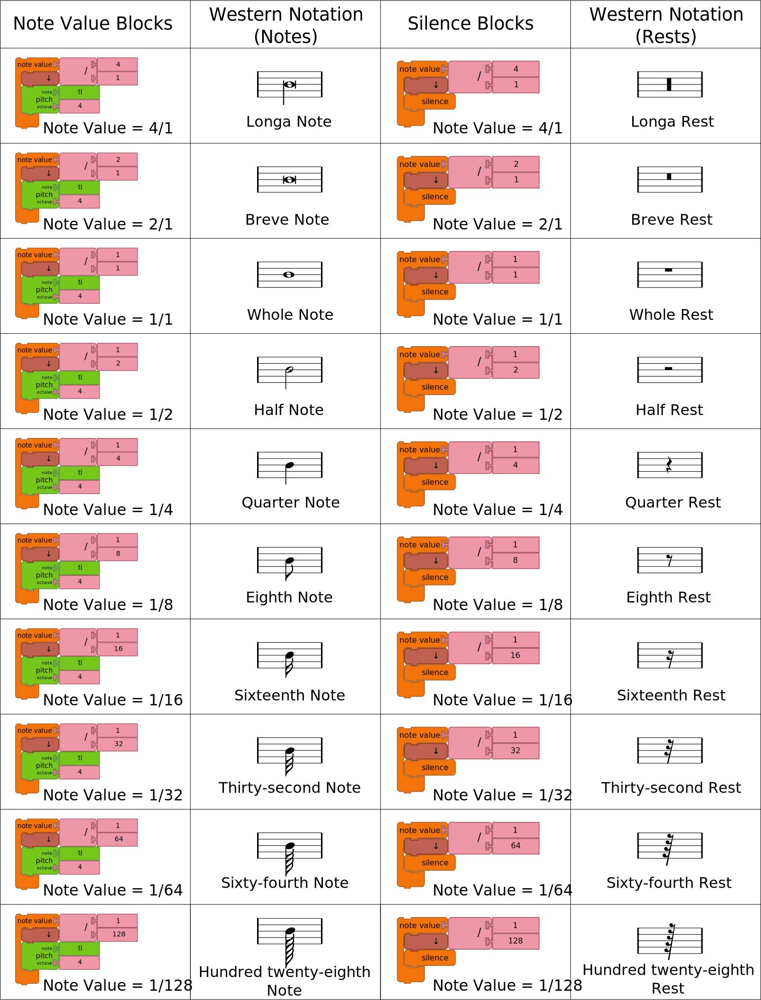
Please refer to the above picture for a visual representation of note values.
2.2 Pitch Blocks
As we have seen, Pitch blocks are used inside the Note value blocks. The Pitch block specifies the pitch name and pitch octave of a note that in combination determines the frequency (and therefore pitch) at which the note is played.
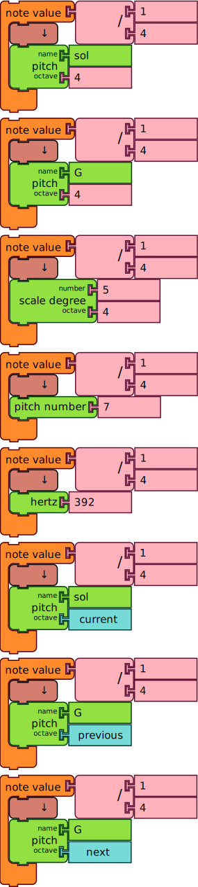
There are many systems you can use to specify a pitch block's name and octave. Some examples are shown above.
The top Pitch block is specified using a Solfege block (Sol
in Octave 4), which contains the notes Do Re Me Fa Sol La Ti .
The pitch of the next block is specified using a Pitch-name block (G
in Octave 4), which contains the notes C D E F G A B.
The next block is specified using a Scale-degree block (the
5th note in the scale, 'G', also in 'Octave 4'),
C == 1, D == 2, .... The Scale-Degree block has numbers like the
Number block, but also has an accidental so that the user may play pitches
outside a given key.
The next blocks is specified using a Nth Modal Pitch block. This block takes a
number argument and turns it into the "nth pitch of a given scale" with an index of 0
(i.e. C for C major is 0). Therefore in order to get G, we input the number
4. The octave argument will force the octave up or down; otherwise the user may just keep
going up or down in either direction to go through scalar pitches of any mode.
The next block is specified using a Pitch-number block (the
7th semi-tone above C in Octave 4 is
G). The offset for the pitch number can be modified using the
Set-pitch-number-offset block.
The pitch of the next block is specified using the Hertz block in conjunction
with a Number block (392 Hertz is G in
Octave 4), which corresponds to the frequency of the sound made.
The octave is specified using a number block and is restricted to whole numbers. In the case where the pitch name is specified by frequency, the octave is ignored.The octave argument can also be specified using a Text block with values current, previous, next which does as 0, -1, 1 respectively.
The octave of the next block is specified using a current text block (Sol
in Octave 4).
The octave of the next block is specified using a previous text block (G
in Octave 3).
The octave of the last block is specified using a next text block (G
in Octave 5).
Note that the pitch name can also be specified using a Text block.
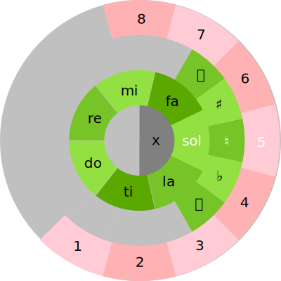
As a convenience, a pie menu is used for selecting pitch, accidental, and octave.


Please refer to the above charts for a visual representation of where notes are located on a keyboard or staff.
2.3 Multiple Pitches

Multiple, simultaneous pitches can be specified by adding multiple Pitch blocks into a single Note value block, like the above example.
2.4 Rests

A rest of the specified note value duration can be constructed using a Silence block in place of a Pitch block.
2.5 Drums

Anywhere a Pitch block can be used—e.g., inside of the matrix or a Note value block—a Drum Sample block can also be used instead. Currently there about two dozen different samples from which to choose. The default drum is a kick drum.

Just as in the multi-pitch example above, you can use multiple Drum blocks within a single Note value blocks, and combine them with Pitch blocks as well.
3. Programming with Music
Previous Section (2. Making Sounds) | Back to Table of Contents | Next Section (4. Widgets)
This section of the guide discusses how to use chunks of notes to program music. Note that you can program with chunks you create by hand or use The Phrase Maker widget to help you get started.
3.1 Actions
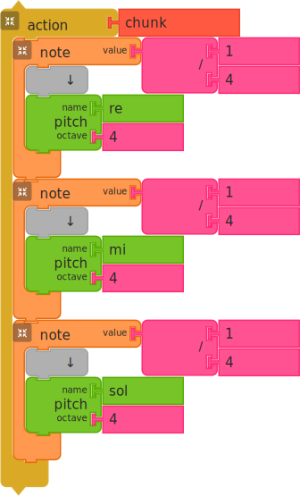
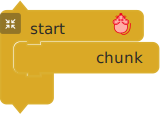
Every time you create a new Action stack, Music Blocks creates a new block
specific to, and linked with, that stack. (The new block is found at the top of the
Block palette, found on the left edge of the screen.) Clicking on and running
this block is the same as clicking on your stack. By default, the new blocks are named
chunk, chunk1, chunk2... but you can rename them by
editing the labels on the Action blocks.
An Action block contains a sequence of actions that will only be executed when the block is referred to by something else, such as a start block. This is useful in orchestrating more complex programs of music.
A Start Block is a Action that will automatically be executed once the start button is pressed. This is where most of your programs will begin at. There are many ways to Run a program: you can click on the Run button at the upper-left corner of the screen to run the music at a fast speed; a long press on the Run button will run it slower (useful for debugging); and the Step button can be used to step through the program one block per button press. (An extra-long press of the Run button will play back the music slowly. A long press of the Step button will step through the program note by note.)
In the example above, the Action block named "chunk" is inside of a Start block, which means that when any of the start buttons is pressed, the code inside the Start block (the Action block) will be executed. You can add more chunks after this one inside the Start block to execute them sequentially.
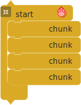

You can repeat actions either by using multiple Action blocks or using a Repeat block.
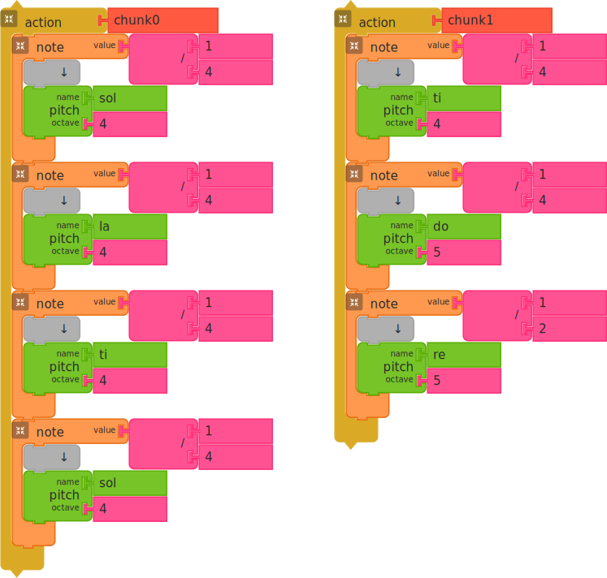
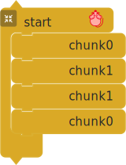
You can also mix and match actions. Here we play the Action block with name
chunk0, followed by chunk1 twice, and then
chunk0 again.
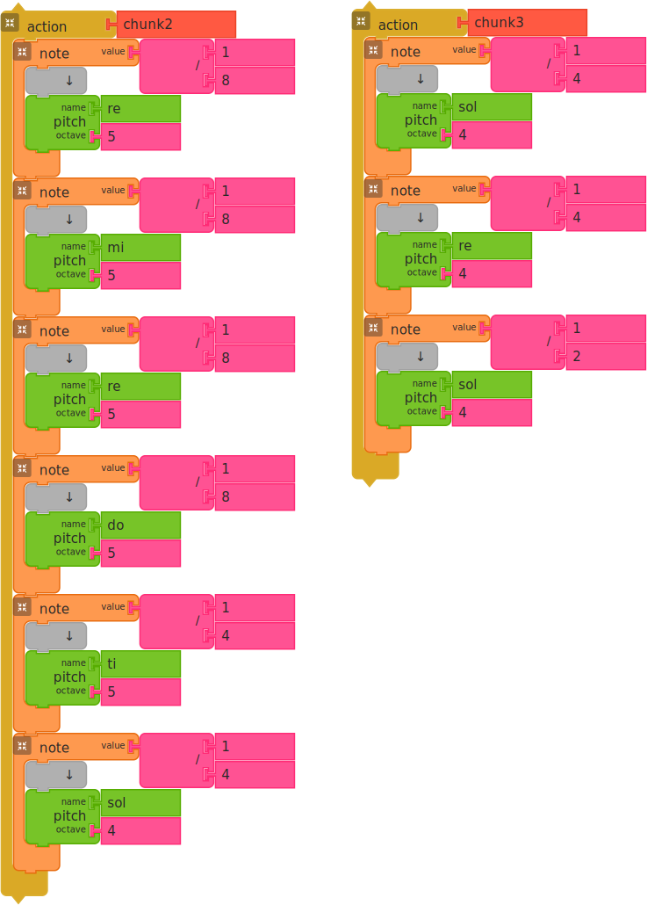
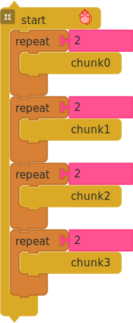
A few more chunks and we can make a song. (Can you read the block notation well enough to guess the outcome? Are you familiar with the song we created?)
3.2 Pitch Transformations
There are many ways to transform pitch, rhythm, and other sonic qualities.
3.2.1 Step Pitch Block
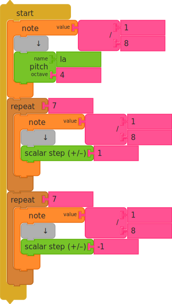
The Step Pitch block will move up or down notes in a scale from the last played
note. In the example above, Step Pitch blocks are used inside of
Repeat blocks to repeat the code 7 times, playing up and down a
scale.
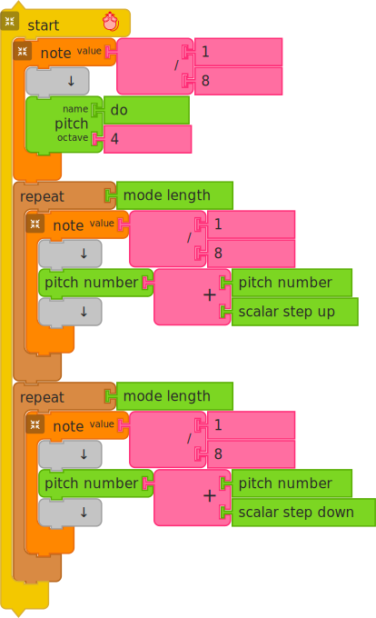
Another way to move up and down notes in a scale is to use the Scalar Step Up and Scalar Step Down blocks. These blocks calculate the number of half-steps to the next note in the current mode. (You can read more about Musical Modes below.) Note that the Mouse Pitch Number block returns the pitch number of the most recent note played.
In this example, we are using the Mode length block, which returns the number of scalar steps in the current mode (7 for Major and Minor modes).
3.2.2 Sharps And Flats
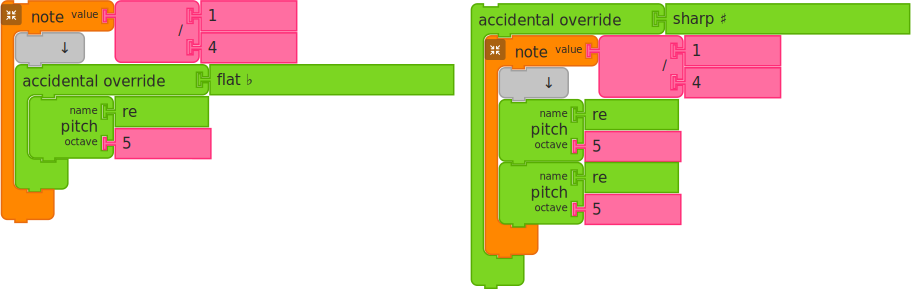
The Accidental block can be wrapped around Pitch blocks,
Note value blocks, or chunks of notes inside of
Action blocks. A sharp will raise the pitch by one half
step. A flat will lower by one half step. In the example, on the left, just the
Pitch block Mi is lowered by one half step; on the right, both
Pitch blocks are raised by one half step. (You can also use a double-sharp or
double-flat accidental.)
3.2.3 Adjusting Transposition
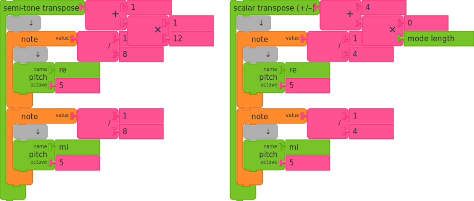
There are multiple ways to transpose a pitch: by semi-tone or scalar steps or by a ratio.
The Semi-tone-transposition block (above left) can be used to make larger shifts
in pitch in half-step units. A positive number shifts the pitch up and a negative number
shifts the pitch down. The input must be a whole number. To shift up an entire octave,
transpose by 12 half-steps. -12 will shift down an entire
octave.
The Scalar-transposition block (above right) shifts a pitch based on the current
key and mode. For example, in C Major, a scalar transposition of
1 would transpose C to D (even though it is a
transposition of 2 half steps). To transpose E to
F is 1 scalar step (or 1 half step). To shift an
entire octave, scalar transpose by the mode length up or down. (In major scales, the mode
length is 7.)

The Transpose-by-ratio block shifts a pitch based on a ratio. For example, a ratio of 2:1 would shift a pitch by an octave; a ratio of 3:2 would shift a pitch by a fifth.
As a convenience, a number of standard scalar transpositions are provided: Unison, Second, Third, ..., Seventh, Down third, and Down sixth, as well as a transposition for Octave.
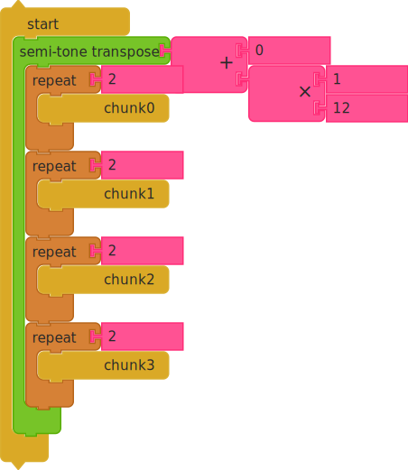
In the example above, we take the song we programmed previously and raise it by one octave.
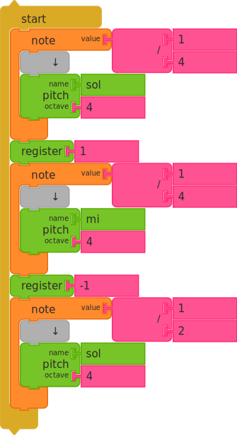
The Register block provides an easy way to modify the register (octave) of the
notes that follow it. In the example above it is first used to bump the
Mi 4 note up by one octave and then to bump the Sol 4 note down
by one octave.
3.2.4 Summary of Pitch Movements
| Representation | Pitch Movement | Properties |
|---|---|---|
| Scalar Step | scalar | 0=no change |
| 1=next scalar pitch in current key and mode | ||
| -1=previous scalar pitch in current key and mode | ||
| If the argument to scalar step is positive, it moves up the scale; if it is negative, it moves down the scale. |
| Music Blocks Code for Scalar Step |
|---|
 |
| The example above demonstrates traveling up and down the major scale by moving an octave up from the starting note, do, one note at a time and then back down the same way. |
| Standard Notation with Scalar Step |
|---|

|
| Representation | Pitch Movement | Properties |
|---|---|---|
| Transposition | Semi-tone | Creates shifts in pitch by half-steps |
| If the argument to transpose is positive, it will shift upwards in pitch; if it is negative, there will be a downwards shift. | ||
| There are 12 half-steps shifts per octave. | ||
| An argument of -12 will shift down one octave. | ||
| An argument of zero will not change the pitch. |
| Music Blocks Code with Scalar Transpose |
|---|

|
| Standard Notation for Scalar Transpose |
|---|

|
| Representation | Pitch Movement | Properties |
|---|---|---|
| Transposition | Scalar | Shifts the pitch based on the current key and mode |
| Each number represents a scalar step. | ||
| Scalar transposition can transform your original key to a new key by counting the notes between the keys. | ||
| For example: Transposing C-D-E-F by 4 (fifth) will give us G-A-B-C | ||
| To transpose an octave: shift by the mode length (7 in major scales) up or down. |
3.2.5 Set Key
The Set key block is used to change both the mode and key of the current scale. (The current scale is used to define the mapping of Solfege [when set Movable Do = True] to notes and also the number of half steps take by the the Scalar step block.) For example, by setting the key to C Major, the scale is defined by starting at C (or Do) and applying the pattern of half steps defined by a Major mode. In this case, the pattern of steps skips past all of the sharps and flats. (On a piano, C Major is just the white keys).
When using the Set key block, the mode argument is used to define the pattern of half steps and the key argument is used to define the starting position of the pattern. For example, when mode = "major" and key = "C", the pattern of half steps is 2 2 1 2 2 2 1 and the first note in the scale from which the pattern is applied is "C".
| Set Key Example |
|---|
| 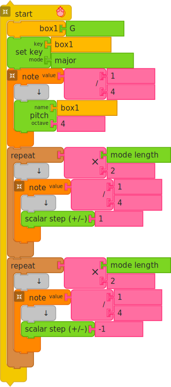 |
Using the example above, one can modify the arguments to Set key in order to move up and down one octave in a scale. The example shows G Major scale, which has an F#, but it could be used for any combination of key and mode.
| Standard Notation for Set Key Example |
|---|
| 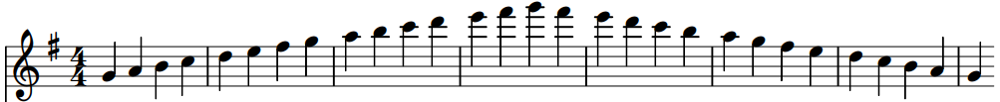 |
Various examples for Major modes are shown in the following table.
| Key | Mode | Mode Pattern in Half Steps | Pitch Pattern |
|---|---|---|---|
| C | Major | 2 2 1 2 2 2 1 | C, D, E, F, G, A, B, C |
| G | Major | 2 2 1 2 2 2 1 | G, A, B, C, D, E, F#, G |
| D | Major | 2 2 1 2 2 2 1 | D, E, F#, G, A, B, C#, D |
| F | Major | 2 2 1 2 2 2 1 | F, G, A, B♭, C, D, E, F |
| B♭ | Major | 2 2 1 2 2 2 1 | B♭, C, D, E♭, F, G, A, B♭ |
The next table is the same sets of various keys (starting pitches), but the mode is set to "Dorian" instead of Major.
| Key | Mode | Mode Pattern in Half Steps | Pitch Pattern |
|---|---|---|---|
| C | Dorian | 2 1 2 2 2 1 2 | C, D, E♭, F, G, A, B♭, C |
| G | Dorian | 2 1 2 2 2 1 2 | G, A, B♭, C, D, E, F, G |
| D | Dorian | 2 1 2 2 2 1 2 | D, E, F, G, A, B, C, D |
| F | Dorian | 2 1 2 2 2 1 2 | F, G, A♭, B♭, C, D, E♭, F |
| B♭ | Dorian | 2 1 2 2 2 1 2 | B♭, C, D♭, E♭, F, G, A♭, B♭ |
This last table is the same set of keys as the above two tables, but the mode is set to "Phrygian".
| Key | Mode | Mode Pattern in Half Steps | Pitch Pattern |
|---|---|---|---|
| C | Phrygian | 1 2 2 2 1 2 2 | C, D♭, E♭, F, G, A♭, B♭, C |
| G | Phrygian | 1 2 2 2 1 2 2 | G, A♭, B♭, C, D, E♭, F, G |
| D | Phrygian | 1 2 2 2 1 2 2 | D, E♭, F, G, A, B♭, C, D |
| F | Phrygian | 1 2 2 2 1 2 2 | F, G♭, A♭, B♭, C, D♭, E♭, F |
| B♭ | Phrygian | 1 2 2 2 1 2 2 | B♭, C♭, D♭, E♭, F, G♭, A♭, B♭ |
Notice how in all the examples, the sets with the same mode results in the same "Mode Pattern of Half Steps", but the resultant "Pitch Pattern" is different. Also, notice how G Dorian and F Major have the same set of pitches in "Pitch Pattern" (they both have B♭ and no other sharps or flats). C Dorian, D Phrygian, and B♭ Major all have the same set of pitches as well (all three have B♭ and E♭).
If these lists were expanded further, there would be many more such examples. These are because these modes (Major, Dorian, and Phrygian) all have essentially the same modal pattern; the starting point is just shifted slightly for each: Dorian could be thought of starting from the second scale degree of Major and Phrygian from the third, for example. Not all modes have this relationship to Major. The ones that do are: Ionian (Major), Dorian, Phrygian, Lydian, Myxolydian, Aeolian (Minor), and Locrian.
Set Key & Scalar Step
The Set key block is used to select a subset of notes in the given temperament. (By default, Music Blocks uses equal temperament of 12 equal divisions of the octave. The key and mode determine which of these notes will be used.)
Set Key & Movable Do
The Set Key block will change the key and mode of the mapping between solfege,
e.g., Do, Re, Mi, to note names, e.g.,
F#, G#, A#, when in F# Major. It only impacts the
mapping of solfege when the movable Do block is set to True.
You can find the Set key block on the Intervals palette.
| Music Blocks for Set Key and Movable Do |
|---|

|
| Standard Notation for Set Key and Movable Do |
|---|

|
| Representation | Pitch Movement | Properties |
|---|---|---|
| Scale Degree | Scalar | The key block sets the key and mode. |
| The scale degree blocks indicate which position the pitch is taking in the scale relative to the tonic which is "scale degree 1". |
| Music Blocks Code with Scale Degrees 1-5 |
|---|
 |
| Standard Notation for Scale Degrees 1-5 |
|---|
 |
| Representation | Pitch Movement | Properties |
|---|---|---|
| Movable “Do” | Advanced transposition by mode | Movable Do in combination with the Scale/Mode blocks will transpose sections of music in a nuanced way. |
| The Set-key block allows you to change both the mode and key of how solfege is mapped to the notes. | ||
| For example, in C major - Do is C, Re is D, Mi is E, etc. | ||
| In F major - Do is F, Re is G, Mi is A |
| Music Blocks Code with Set Key and Movable Do |
|---|
| 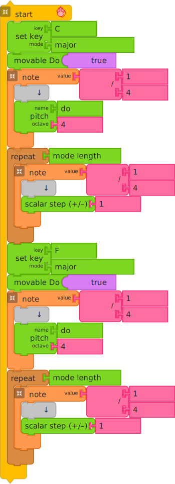 |
| Standard Notation Code for Set Key and Movable Do |
|---|
 |
| Representation | Pitch Movement | Properties |
|---|---|---|
| Movable “Do” | Advanced transposition by mode | You also have the option of changing the mode to Minor, Major, Chromatic, and many other exotic modes like hirajoshi, as shown in the example below. |
| Music Blocks for Set Key and Scalar Step |
|---|
| 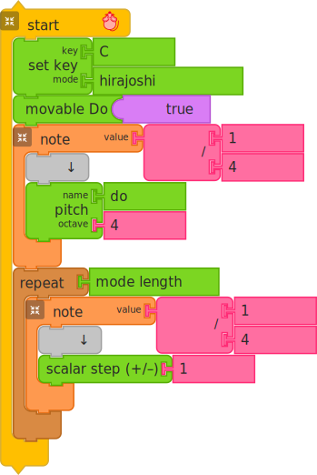 |
| Standard Notation with Set Key and Scalar Step |
|---|
 |
3.2.6 Fixed and Movable Pitch Systems
Music Blocks allows users to express and explore musical ideas in a variety of different systems. The main systems of expression are fixed and movable.
Fixed and Movable Systems
Fixed pitch systems represent pitches in an absolute way. Pitches in a fixed system do not change, regardless of a tonal context (such as key or mode). Movable systems, on the other hand, represent pitches in a relative way based on their tonal context.
An example of a fixed system is Alphabet Notation. Pitches are expressed as
A, B, C, D, E,
F, and G. Regardless of whether the key is C major or G minor,
the pitch of G is the same. In Alphabet Notation, pitches are the same
("fixed") regardless of the context.
 System")
An example of a movable system is Scale Degree. Pitches are expressed as 1,
2, 3, 4, 5, 6, and
7. For C major, these pitches are C, D,
E, F, G, A, and B. For G
(natural) minor, these pitches are G, A, B♭,
C, D, E♭, and F. For D dorian, these
pitches are D, E, F, G,
A, B, and C. In all three examples, the pitches are
determined by the tonal context.
 System")
Solfege is an example of a system that can be either fixed or movable; it can either be a fixed system (Fixed Solfege) or a movable system (Movable Solfege).
Fixed Solfege works like the alphabet system; La is A,
Ti is B, Do is C, etc. Context does
not affect the sounding pitch. Movable Solfege works like the Scale Degree system; for any
major, Do is 1st scale degree, Re is 2nd, Mi is
3rd, Fa is 4th, etc. Hence, in Movable Solfege in the key of G (natural)
minor, Do is G, Re is A, et al.

Music Blocks users can create and preview code in both Fixed Solfege and Movable Solfege. Teachers and learners may use either system (or both) to express their musical ideas as well as deepen their understanding of music.
Using Tonal Context with Movable Systems
For movable systems an important point of context is its key and mode. For "C Major", the
key is "C" and the mode is "Major" (also called Ionian). Key and mode are important as
they define the tonal framework, i.e., which pitches are "in" and which are "out". It also
defines the function of the pitches within the framework. This is why for scale degrees
1, 2, 3, 4, and 5, the
expected result for C major is C, D, E,
F, and G (skipping any sharps/flats), while those same scale
degrees for D major are D, E, F#, G,
and A. The set of pitches that make up C major have no sharps or flats, so
they are skipped. D major has two sharps, F# and C#. The
F# is the 3rd scale degree for D major.
Scale Degree with Set Key is a very powerful tool for expression. It is also very common in music pedagogy. However, because the number values 1-7 are hard wired into this system, it is a tool that works best to express seven-pitch tonal frameworks (e.g. major, minor, and other common seven pitch scales). For musical ideas where a more purely mathematical form of expression is required, Music Blocks offers the user the nth Modal Pitch block.
nth Modal Pitch is similar to Scale Degree in that it is a movable
system that uses numbers to express pitches. However, unlike Scale Degree,
nth Modal Pitch starts at 0, allows for negative numbers, and is not
restricted to a seven-pitch tonal framework. 0 is the first pitch of the
mode, 1 is the next pitch, 2 is the pitch above that, etc.
-1 is the pitch before the first pitch of the mode. This tool is especially
helpful for expressing a musical idea that requires computation as you can run
computations directly on the number value. It is also helpful if you are, for example,
creating music in a whole tone (six note) pitch space. In the case of Set Key set
to "whole tone", 6 would be the octave above.
Pitch Number, MIDI, and Set Pitch Number Offset
Pitch Number is similar to nth Modal Pitch in that it is a zero-based,
mathematical system to express pitches. However, unlike nth Modal Pitch,
Pitch Number disregards any tonal framework. It is also chromatic by default,
meaning that its pitch space includes the sharp/flat pitches (black keys on piano) as well
as the natural pitches (white keys on piano). By default, middle C (C_4) is
0. The C major scale in the 4th octave is 0, 2,
4, 5, 7, 9, and 11.
12 is the C an octave above middle C (C_5). This system is useful
mathematically, but because it disregards key, it is difficult to control when creating
music. That being said, fretted instruments such as ukulele and guitar use this system to
express pitch, so it is a good system for expressing how these instruments work.
MIDI also uses a similar system to Pitch Number to express pitches, but the 0 is
offset from Music Blocks' default. In order to change the sounding pitch of
0 for Pitch Number, use set pitch number offset. This makes
Pitch Number blocks behave as a relative system as it transposes the pitches up
or down accordingly (but has no effect on key).
Two Subsystems for Movable
For Movable Do, there exists yet two more systems. One system, which we call
Movable=Do, allows the user to express solfege syllables in relation to the
Major mode. Therefore, if a user were to specify A minor, then La would be A, the first
scale degree in A Minor. The other system, which we call Movable=La allows
the user to express solfege in relation to the particular mode specified. Therefore, if a
user were to specify A Minor, then Do would be A. Scale Degree works like
Movable=La by default such that 1 is always the first pitch of a
given mode.
Because some users may want to explicitly spell out all of the pitches regardless of the chosen key, we allow them to use Scale Degree with the Movable Do block (remember, Scale Degree works like Movable=La by default). Please see this code as an example.
The following chart describes the behavior of different blocks depending on whether or not a Movable Do block is present.
| Block(s) | Fixed or Movable? (Do or La?) | Set Key Transformation? |
|---|---|---|
| Alphabet Pitch | Fixed | No effect. |
| Solfege | Fixed by default | No effect. |
| Solfege and Movable=Do | Specified via "movable" block set to Do | Yes. |
| Solfege and Movable=La | Specified via "movable" block set to La | Yes. Works like Scale Degree. |
| n^th modal pitch | Movable | Yes. Good for modes of any length. |
| Scale Degree | Movable | Yes. Most useful for 7 note systems. Works just like Movable=La for Solfege by default. |
| Scale Degree and Movable=Do | Movable | Yes. When preceded by Movable=Do, the user can be explicit in their spelling. |
| Scalar Step | Movable | Yes. Navigates up/down within nth modal pitch space. |
| Scalar Interval | Movable | Yes. Adds above/under within nth modal pitch space. |
| Scalar Inversion | Movable | Yes. Inversion around a specified axis within nth modal pitch space. |
| Pitch Number | Movable | No effect. Pitches can be transformed via Set Pitch Number Offset. |
Illustrative example:
The following example demonstrates how the Scale Degree functionality combines math and musical modifiers. When combining numbers and accidentals, it recreates the same functionality as the Scale Degree block.

3.2.7 Intervals
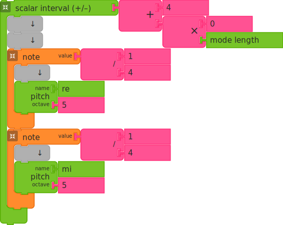
The Scalar interval block calculates a relative interval based on the current
mode, skipping all notes outside of the mode. For example, a fifth, and adds the
additional pitches to a note's playback. In the figure, we add La to
Re and Ti to Mi.
As a convenience, a number of standard scalar intervals are provided on the Intervals palette: Unison, Second, Third, ..., Seventh, Down third, and Down sixth.
The Scalar interval measure block can be used to measure the number of scalar steps between two pitched.
3.2.7.1 Absolute Intervals
Absolute (or semi-tone) intervals are based on half-steps.
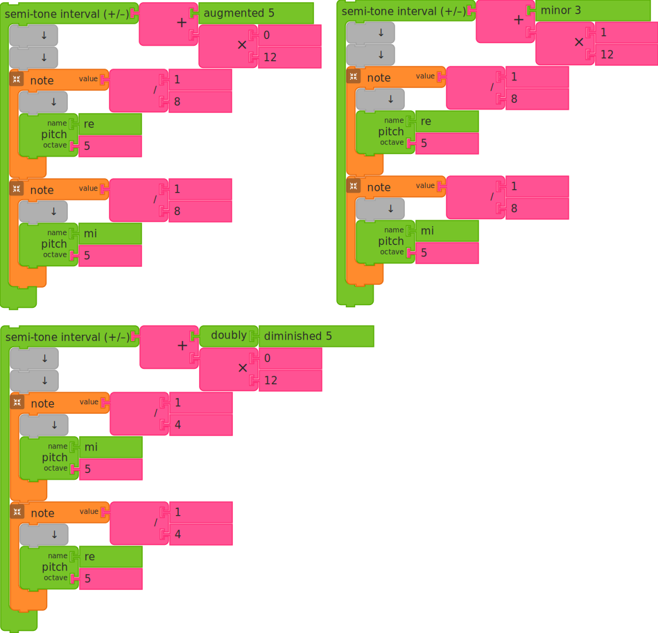
The Augmented block calculates an absolute interval (in half-steps), e.g., an augmented fifth, and adds the additional pitches to a note. Similarly, the Minor block calculates an absolute interval, e.g., a minor third. Other absolute intervals include Perfect, Diminished, and Major.
In the augmented fifth example above, a chord of D5 and A5 are
played, followed by a chord of E5 and C5. In the minor third
example, which includes a shift of one octave, first a chord of D5 and
F5 is played, followed by chord of E5 and G6.
As a convenience, a number of standard absolute intervals are provided on the Intervals palette: Major 2, Minor 3, Perfect 4, Augmented 6, Diminished 8, et al.
The Doubly block can be used to create a double augmentation or double diminishment.
The Semi-tone interval measure block can be used to measure the number of half-steps between two pitches.
3.2.7.2 Ratio Intervals
Another way to think about intervals is in terms of ratios. For example, a ratio of 2:1 would be an octave shift up; 1:2 would be an octave shift down; 3/2 would be a fifth.
The Ratio Interval block lets you generate an interval based on a ratio.
3.2.8 Chords
A chord is a group of notes that are played together (often used for harmony in music). There are triads (three notes), tetrachords (four notes), and even five-, six-, and seven-note chords.
The Chord block builds a chord from a base note.

We support many basic chords:
| chord | intervals | example |
|---|---|---|
| major | 1 4 7 | C major C - E - G |
| minor | 1 3 7 | C minor C - E♭ - G |
| dominant 7 | 1 4 7 10 | C7 C - E - G - B♭ |
| minor 7 | 1 3 7 10 | Cmin7 C - E♭ - G - B♭ |
| major 7 | 1 4 7 11 | Cmaj7 C - E - G - B |
The Arpeggio block also builds a chord from a base note, but rather than playing all of the pitches at once, each pitch is played in sequence.
In the example above, since the Major chord intervals are 1 4 7, the notes played are do, mi, sol, sol, ti, mi.
3.2.9 Inversion
The Invert block will rotate a series of notes around a target note. There are
three different modes of the Invert block: even, odd, and
scalar. In even and odd modes, the rotation is based on
half-steps. In even and scalar mode, the point of rotation is the given
note. In odd mode, the point of rotation is shifted up by a
1/4 step, enabling rotation around a point between two notes. In "scalar"
mode, the scalar interval is preserved around the point of rotation.
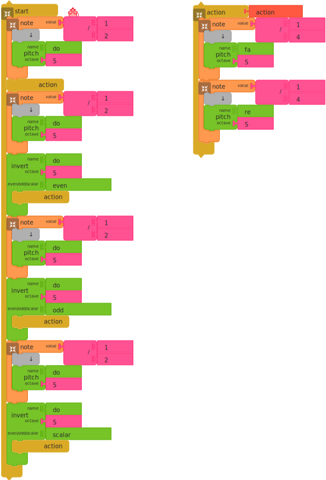
NOTE: The initial C5 pitch (as a half note) remains unchanged (in all of the
examples) as it is outside of the invert block.
The above example code has an even inversion for two notes F5 and
D5 around the reference pitch of C5. We would expect the
following results:
Even inversion
| Starting pitch | Distance from C5 |
Inverse distance from C5 |
Ending pitch |
|---|---|---|---|
F5 |
5 half steps above | 5 half steps below | G4 |
D5 |
2 half steps above | 2 half steps below | B♭4 |
This operation can also be visualized on a pitch clock. The arrows on the following diagram point from the starting pitch, around the axis of the reference pitch, to its destination ending pitch.

In standard notation the result of this even inversion operation is depicted in the second measure of the following example. The first measure is the original reference.

Underneath the even inversion in the example code is an odd inversion
for the same two notes of F5 and D5 around the same reference
pitch of C5. We would expect the following results:
Odd inversion
| Starting pitch |
Distance from midway-point between C5 and C♯5
|
Inverse distance from midway-point between C5 and C♯5
|
Ending pitch |
|---|---|---|---|
F5 |
4.5 half steps above | 4.5 half steps below | A♭4 |
D5 |
1.5 half steps below | 1.5 half steps above | B4 |
This operation can be visualized on a pitch clock similar to even inversion
except offset in-between C5 and C♯5 (i.e. quarter step
above C5).

In standard notation the result of this odd inversion operation is depicted in
second measure of the following example. The first measure is the original reference.
NOTE: The C5 pitch remains unchanged as it is not operated upon in the
example block code (above). If it were contained in the operation it would be changed to
C♯5 (i.e. C5 is 0.5 half steps below
the axis of rotation, so the result of an inversion around
C5 and odd would be 0.5 half steps above the axis of
rotation).

Scalar inversion
Underneath the even and odd inversion blocks in the example code is an inversion block set to scalar. We would expect the following results:
| Starting pitch | Scalar distance from C5 (in steps) |
Inverse scalar distance from C5 (in steps)
|
Ending pitch |
|---|---|---|---|
F5 |
3 above (C5 --> D5 --> E5 --> F5) | 3 below (C5 --> B4 --> A4 --> G4) | G4 |
D5 |
1 above (C5 --> D5) | 1 below (C5 --> B4) | B4 |
This operation can be visualized on a pitch clock similar to odd and even except that all non-scalar pitches (i.e. pitches outside the chosen key) are skipped. NOTE: The scalar pitches are shown in bold in the following pitch clock diagram.

In standard notation the result of scalar inversion operation is depicted in the second measure of the following example. The first measure is the original reference.

In the invert (even) example above, notes are inverted around C5. In
the invert (odd) example, notes are inverted around a point midway between
C5 and C♯5. In the invert (scalar) example, notes are
inverted around C5, by scalar steps rather than half-steps.
3.2.10 Converters
Converters are used to transform one form of inputs into other, more usable form of outputs. This section of the guide will talk about the various conversion options Music Blocks has to offer.
Generalized shape of a converter is:

where the right argument is converted accordingly, and output is received on the left side.
Note: Before an introduction of the different types of converters, a little introduction on Y staff in Music Blocks. Staff is a set of horizontal lines and spaces and different positions along Y axis represents different notes. [C, D, E, F, G, A, B]

3.2.9.1 Y to Pitch

This converter takes input in the form of a number that represents Staff Y position in pixels, and processes the value such that it can be used with certain pitch blocks (pitch number, nth modal pitch, pitch) to produce notes corresponding to given Staff Y position as an argument.
Additionally, the block can be plugged into a print block to view the converted note value.
3.2.9.2 Pitch converter

Pitch converter offers a range of options through a pie-menu based interface and it can potentially convert or extract info out of the current playing pitch using the current pitch block as an input. It can also take custom input in form or solfege, hertz, pitch number etc.
All these options are provided in the form of a pie-menu which can be accessed simply by clicking on the converter.

Below explained is the utility of every conversion option:
0. Alphabet:
Prints the alphabet data of the note being played e.g A, B, C, D, E, F, G, including accidentals.
1. Alphabet class:
Prints the alphabet data of the note being played e.g A, B, C, D, E, F, G. It doesn't print any info regarding accidentals.
2. Solfege Syllable:
Similar to Alphabet class, returns the data in form of solfege e.g do, re, mi. It too, gives no info regarding accidentals.
3. Pitch class:
Returns a number between 0 to 11, corresponding to the note played, where C is 0 and B is 11. Each increase in the number signifies an increase by one semitone.
4. Scalar class:
Returns a number between 1-7 corresponding to the scale degree of the note being played, with reference to the chosen mode. Provides no info regarding accidentals.
5. Scale Degree:
Intuitively, returns the scale degree of the note being played with reference to the chosen mode. It can also be thought of as Scalar class with accidentals.
6. N^th Degree:
Zero-based index of the degree of note being played in the chosen mode.
7. Pitch in Hertz:
Returns the value in hertz of the pitch of the note being currently played.
8. Pitch Number:
Value of the pitch of the note currently being played. It is different from Pitch class in the way that it can go below 0 and above 11 depending upon the octave.
9. Staff Y:
Returns the Y staff position of the note being played according to staff dimensions. It takes into account only the alphabet class, no accidental info is processed.
3.2.9.3 Number to Octave

This converter takes a numeric value which denotes pitch number and returns the octave corresponding to that pitch number.
3.2.9.4 Number to Pitch
This converter takes a numeric value which denotes pitch number and returns the pitch name corresponding to that pitch number. No octave is inferred.
| Converter Name | Description |
|---|---|
| alphabet | Converts pitch to letter (as defined above). G maps to G. G♯ maps to G#. |
| alphabet class | Converts pitch to letter (as defined above). G maps to G. G♯ also maps to G. |
| solfege syllable | Converts pitch to solfege (as defined above). G maps to sol. |
| solfege class | Converts pitch to solfege class (as defined above). G maps to sol. G♯ maps to sol. |
| pitch class | Converts pitch to pitch class (as defined above). G maps to 7. |
| scalar class | Converts pitch to scalar class (as defined above). G maps to 5. |
| scale degree | Converts pitch to scale degree (as defined above). G maps to 5. |
| nth degree | Converts pitch to nth degree (as defined above). G maps to 4. |
| staff y | Maps the current pitch to a y value that corresponds to a position on the staff. G4 maps to 50. |
| pitch number | Converts pitch to pitch number (as defined above). G maps to 7. |
| pitch in hertz | Converts pitch to hertz. G4 maps to 392Hz. |
| pitch to color | Converts pitch to a color value (0-100). C maps to 0, G maps to 58.3, etc. |
| pitch to shade | Coverts the octave value of the current pitch to a shade. Octave 4 maps to 50. |
3.3 Note Value Transformations
3.3.1 Dotted Notes
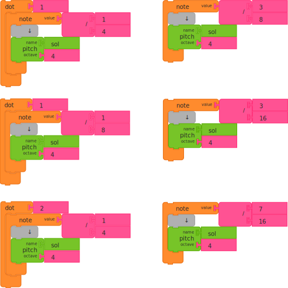
You can "dot" notes using the Dot block. A dotted note extends the rhythmic
duration of a note by 50%. E.g., a dotted quarter note will play for 3/8
(i.e. 1/4 + 1/8) of a beat. A dotted eighth note will play for
3/16 (i.e. 1/8 + 1/16) of a beat. A double dot extends the
duration by 75% (i.e. 50% + [50% of 50%]). For example, a
double-dotted quarter note will play for 7/16
(i.e. 1/4 + 1/8 + 1/16) of a beat (which is the same as
4/16 + 2/16 + 1/16 = 7/16).
The dot block is useful as an expression of musical rhythm--it is convenient and helps to
organize musical ideas (e.g. many melodies use dots as the basis of their rhythmic
motifs), however you can achieve the same rhythmic result as dot by putting the
calculation directly into note value as well. For example, indicating
3/8 instead of 1/4 will result in a dotted quarter note.
The chart below shows two common examples, dotted quarter and dotted eighth, and how to achieve them with either the dot block or by direct calculation into a note's note value.
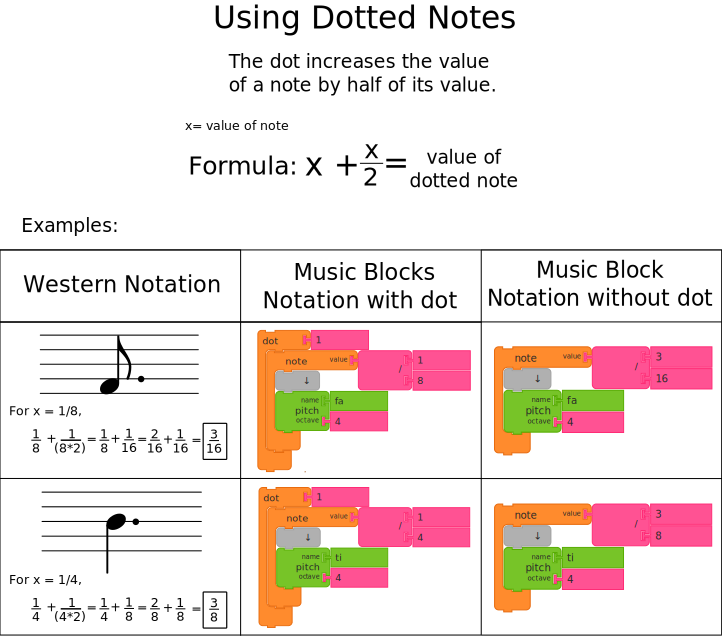
3.3.2 Speeding Up and Slowing Down Notes via Mathematical Operations
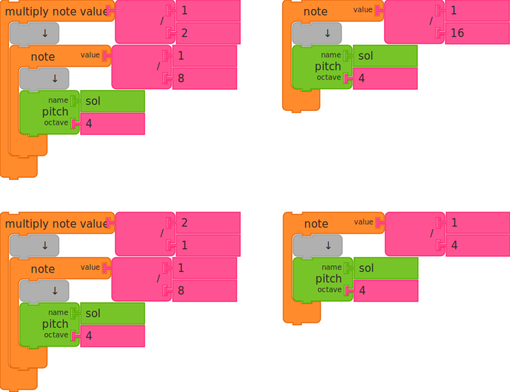
You can also multiply (or divide) the note value, which will change the duration of the
notes by changing their note values. Multiplying the note value of an
1/8 note by 1/2 is the equivalent of playing a
1/16 note (i.e. 1/2 * 1/8 = 1/16) . Multiplying the note value
of an 1/8 note by 2/1 (which has the effect of dividing by
1/2) will result in the equivalent of a 1/4 note.
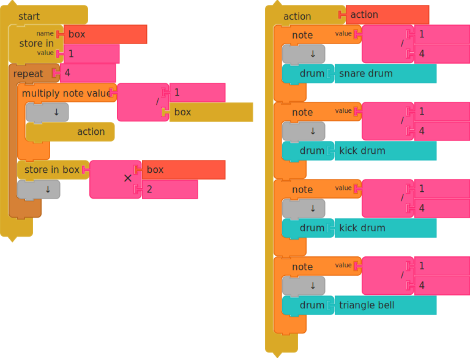
In the above example, the sequence of drum note values is decreased over time, at each repetition.
3.3.3 Repeating Notes
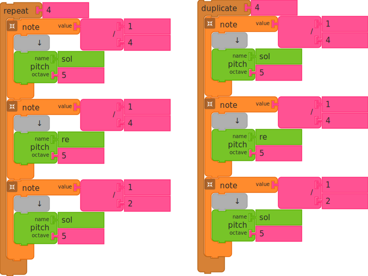
There are several ways to repeat notes. The Repeat block will play a sequence of notes multiple times; the Duplicate block will repeat each note in a sequence.
In the example, on the left, the result would be
Sol, Re, Sol, Sol, Re, Sol, Sol, Re, Sol, Sol, Re, Sol; on the right the
result would be Sol, Sol, Sol, Sol, Re, Re, Re, Re, Sol, Sol, Sol, Sol.
3.3.4 Swinging Notes and Tied Notes
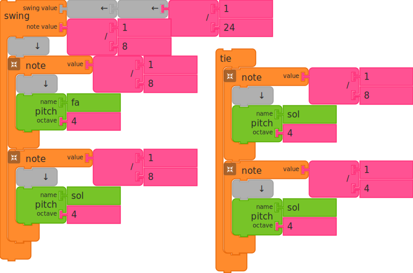
The Swing block works on pairs of notes (specified by note value), adding some duration (specified by swing value) to the first note and taking the same amount from the second note. Notes that do not match note value are unchanged.
In the example, re5 would be played as a 1/6 note and
mi5 would be played as a 1/12 note (1/8 + 1/24 === 1/6
and 1/8 - 1/24 === 1/12). Observe that the total duration of the pair of
notes is unchanged.
Tie also works on pairs of notes, combining them into one note. (The notes must be identical in pitch, but can vary in rhythm.)
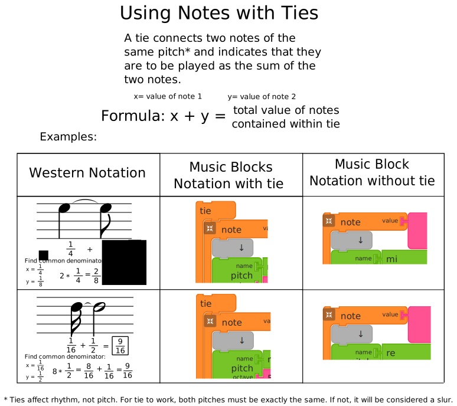
3.3.5 Beat
The beat of the music is determined by the Meter block (by default, it is set to 4:4).
The Pickup block can be used to accommodate any notes that come in before the beat.

The Beat count block is the number of the current beat, eg 1, 2, 3, or 4. In the figure, it is used to take an action on the first beat of each measure.

The Measure count block returns the current measure.

Specifying beat is useful in that you can have the character of a note vary depending upon
the beat. In the example below, the volume of notes on Beat 1 and Beat
3 are increased, while the volume of off beats is decreased.
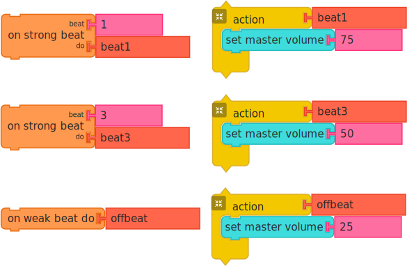
The On-Beat-Do and Off-Beat-Do blocks let you specify actions to take on specific beats. (Note that the action is run before any blocks inside the note block associated with the beat are run.)
More examples can be found in the Graphics section below.
3.3.6 Staccato and Slur
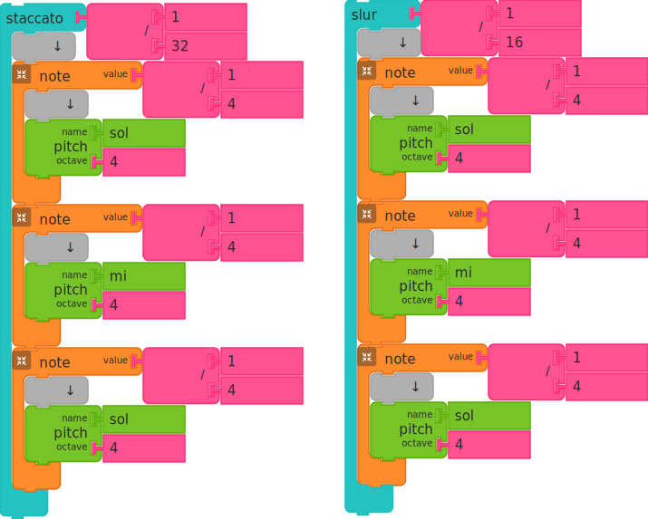
The Staccato block shortens the length of the actual note—making them tighter bursts—while maintaining the specified rhythmic value of the notes.
The Slur block lengthens the sustain of notes—running longer than the noted duration and blending it into the next note—while maintaining the specified rhythmic value of the notes.
3.3.7 Backwards
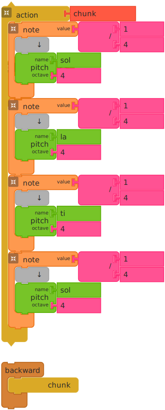
The Backward block will play the contained notes in reverse order (retrograde).
In the example above, the notes in chunk are played as Sol,
Ti, La, Sol, i.e., from the bottom to the top of
the stack.
An example from Bach is provided. In the example, there are two voices, one which plays the composition forward and one that plays the same composition backward. RUN LIVE
Note that all of the blocks inside a Backward block are reverse, so use this feature with caution if you include logic intermixed with notes.
3.4 Other Transformations
3.4.1 Set Volume and Crescendo
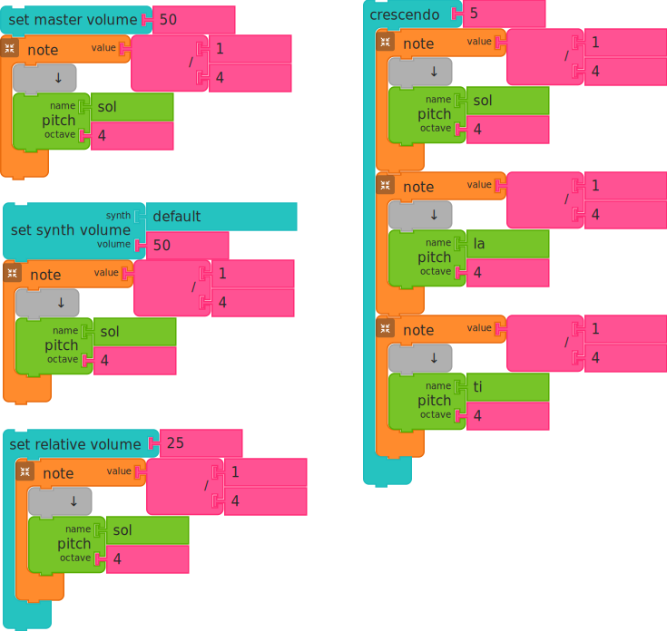
The Set master volume block will change the master volume. The default is
50; the range is 0 (silence) to 100 (full volume).
The Set synth volume block will change the volume of a particular synth, e.g.,
violin, snare drum, etc. The default volume is 50;
the range is 0 (silence) to 100 (full volume). In the example,
the synth name block is used to select the current synth.
As a convenience, a number of standard volume blocks are provided: from loudest to quietest, there is fff, ff f, mf, mp, p, pp, and ppp. In musical terms "f" means "forte" or loud, "p" means "piano" or soft, and "m" means "mezzo" or middle.
The Set Relative Volume block modifies the clamped note's volume according to the
input value of the block in an added (or subtracted when negative) percentage with respect
to the original volume. For example, 100 would mean doubling the current
volume.
The Crescendo block will increase (or decrease) the volume of the contained notes
by a specified amount for every note played. For example, if you have 3 notes in sequence
contained in a Crescendo block with a value of 5, the final note
will be at 15% more than the original value for volume.
NOTE: The Crescendo block does not alter the volume of a note as it is being played. Music Blocks does not yet have this functionality.
3.4.2 Setting Instrument
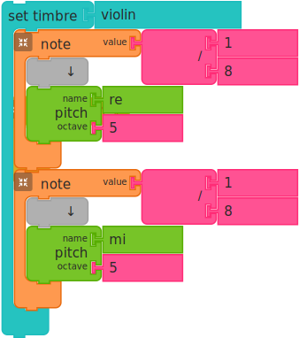
The default instrument is an electronic synthesizer, so by default, that is the instrument used when playing notes. You can override this default for a group of notes by using the Set Instrument block. It will select an instrument for the synthesizer for any contained blocks, e.g., violin.

You can also override the default using the Set default instrument block. In the example above, the default instrument is set to piano, so any note that is not inside of a Set instrument block will be played using the piano synthesizer. The first note in this example is piano; the second note is guitar; and the third is piano.
3.4.3 Setting Key and Mode
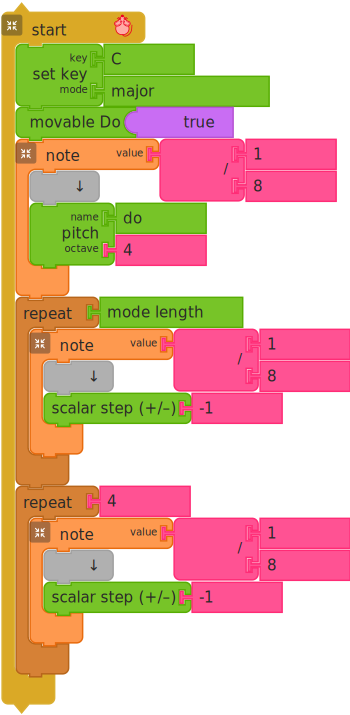
The Set Key block will change the key and mode of the mapping between solfege,
e.g., Do, Re, Mi, to note names, e.g.,
C, D, E, when in C Major. Modes include Major and
Minor, Chromatic, and a number of more exotic modes, such as Bebop, Geez, Maqam, etc. This
block allows users to access "movable Do" within Music Blocks, where the mapping of
solfege to particular pitch changes depending on the user's specified tonality.
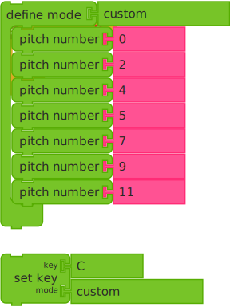
The Define mode block can be used to define a custom mode by defining the number and size of the steps within an octave. You can use your custom mode with the Set key block.
3.4.4 Vibrato, Tremelo, et al.
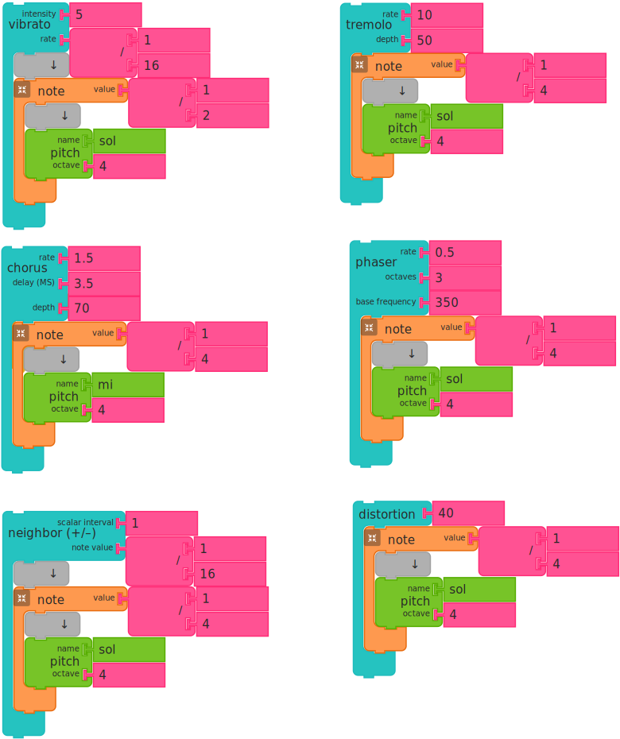
The Vibrato Block adds a rapid variation in pitch to any contained notes. The
intensity of the variation ranges from 1 to 100 (cents), e.g.
plus or minus up to one half step. The rate argument determines the rate of the variation.
The other effects blocks also modulate pitch over time. Give them a try.
3.5 Voices
Each Start block runs as a separate voice in Music Blocks. (When you click on the Run button, all of the Start blocks are run concurrently.)

If we put our song into an action...

...we can run it from multiple Start blocks.
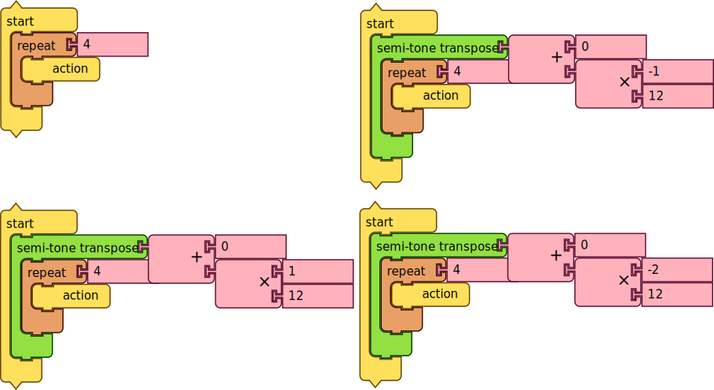
It gets more interesting if we shift up and down octaves.
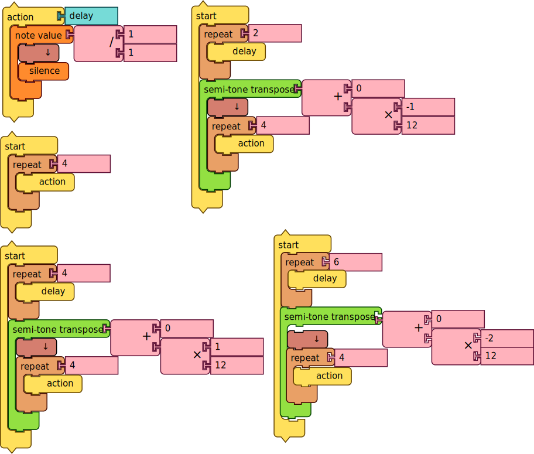
And even more interesting if we bring the various voices offset in time.
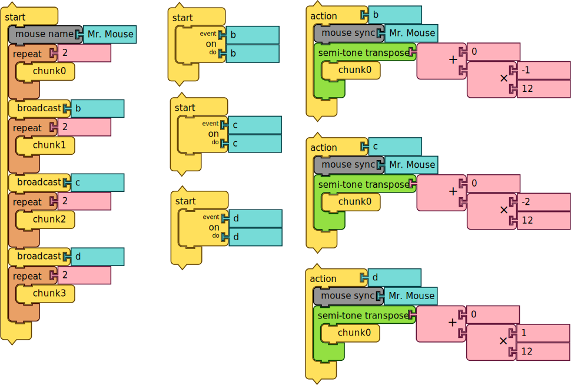
An alternative to use a preprogrammed delay is to use the Broadcast block to bring in multiple voices. In the example above, after each section of the song is played, a new event is broadcasted, bringing in a new voice. Note the use of the Mouse Sync block. This ensures that the multiple voices are synced to the same master clock.

A special Start drum version of the Start block is available for laying
down a drum track. Any Pitch blocks encountered while starting from a drum will
be played as C2
with the default drum sample. In the example above, all of the notes in
chunk will be played with a kick drum.
3.6 Adding graphics
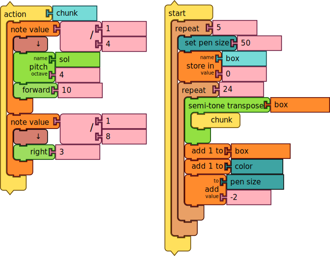

Turtle graphics can be combined with the music blocks. By placing graphics blocks, e.g., Forward and Right, inside of Note value blocks, the graphics stay in sync with the music. In this example, the turtle moves forward each time a quarter note is played. It turns right during the eighth note. The pitch is decreased by one half step, the pen size decreases, and the pen color increases at each step in the inner repeat loop.

Another example of graphics synchronized to the music by placing the graphics commands inside of Note value blocks

Another approach to graphics is to use modulate them based on the
beat. In the example above, we call the same graphics action for
each note, but the parameters associated with the action, such as pen width, are dependent
upon which beat we are on. On Beat 1, the pen size is set to 50 and the
volume to 75. On Beat 3, the pen size is set to
25 and the volume to 50. On off beats, the pen size is set to
5 and the volumne to 5. The resultant graphic is shown below.

The On-Every-Note-Do block lets you specify an action to take whenever a note is played. In the example above, the note value is used to determine the portion of an arc to draw, i.e., a 1/4 note draws a 1/4 circle, a 1/2 note draw 1/2 circle, and a whole note draws a full circle.
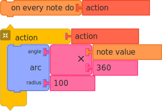
The On-Every-Note-Do block is found in the Crab Canon project on the Planet to "plot the music". The mouse moves up and down based on the change in pich between notes and to the right in proportion to the note value.

Music Blocks has an internal "conductor" maintaining the beat. When the Run button is clicked, the program begins and an internal master (or "conductor") clock starts up. All of the music tries to stay synced to that clock.

For example, if you have multiple voices (mice), they all share the same conductor in order to keep on the same beat. If a voice (mouse) is falling behind, Music Blocks tries to catch up on the next note by truncating it. If it is an 1/8 note behind and the next note is a 1/2 note, then only an 3/8 note would be played, so as to catch up. That is a somewhat extreme example—usually the timing errors are only very very small differences.
But in some situations, the timing errors can be very large. This is when the No-clock block is used.
A typical problem is when the music is not played continuously. Imagine an interactive game where a hero is battling a monster. Our hero plays theme music whenever the monster is defeated. But that might occur at any time, hence it is not going to be in sync with the conductor. The offset could be tens of seconds. This would mean that all of the notes in the theme music might be consumed by trying to catch up with the conductor. The No-clock block essentially says, do your own thing and don't worry about the conductor.
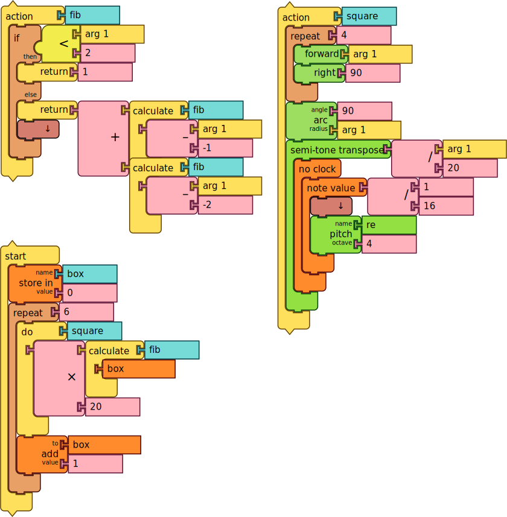
In this example, because the computation and graphics are more complex, a No-clock block is used to decouple the graphics from the master clock. The "No-clock* block prioritizes the sequence of actions over the specified rhythm.

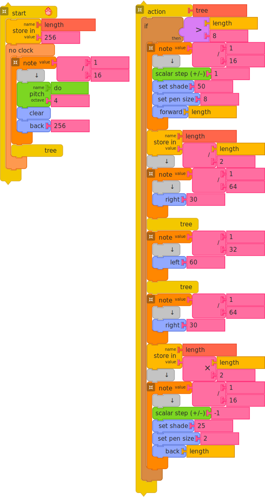
Another example of embedding graphics into notes: in case, a recursive tree drawing, where the pitch goes up as the branches ascend.

3.7 Interactions
There are many ways to interactive with Music Blocks, including tracking the mouse position to impact some aspect of the music.

For example, we can launch the phrases (chunks) interactively. We use the mouse position
to generate a suffix: 0, 1, 2, or 3,
depending on the quadrant. When the mouse is in the lower-left quadrant,
chunk0 is played; lower-right quadrant, chunk1; upper-left
quadrant, chunk2; and upper-right quadrant, chunk3.
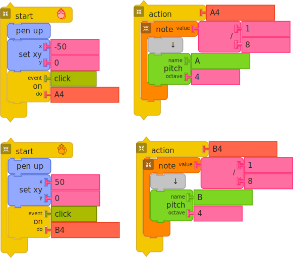
In the example above, a simple two-key piano is created by associating click events on two different turtles with individual notes. Can you make an 8-key piano?

You can also add a bit of randomness to your music. In the top example above, the
One-of block is used to randomly assign either Do or
Re each time the Note value block is played. In the bottom example
above, the One-of block is used to randomly select between
chunk1 and chunk2.
Musical Paint has been a popular activity dating back to programs such as Dan Franzblau's Vidsizer (1979) or Morwaread Farbood's Hyperscore (2002). Music Blocks can be used to create musical paint as well. In the somewhat ambitious example below, we go a step further than the typical paint program in that you can not only paint music (a la Vidsizer) and playback your painting as a composition (a la Hyperscore), but also generate Note blocks from your composition.
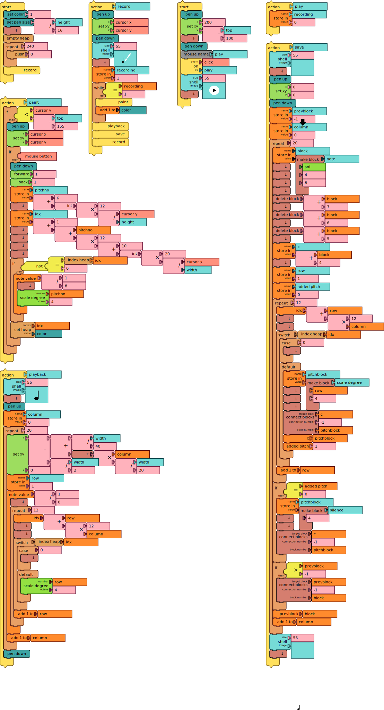
The program works by first creating an array from the heap that corresponds to a 20x12 grid of notes on the screen: 20 columns, representing time from left to right; and 12 rows, corresponding to scalar pitch values, which increase in value from the bottom to the top.
The record action repeatedly calls the paint action until the playback button is clicked.
The paint action tracks the mouse (Set XY to cursor x and cursor y) and, if the mouse button is pressed, marks an entry in the array corresponding to that note, plays the note, and leaves behind a "drop of paint".
The playback action is invoked by clicking on the play mouse, which sets
recording to 0, thus breaking out of the paint "while loop".
Playback scans each column in the array from left to right for pitches to play and
generates a chord of pitches for each column.
Once the playback action is complete, the save action is invoked. Again each column in the array is scanned, but this time, instead of playing notes, the Make Block block is called in order to generate a stack of notes that correspond to the composition. This stack can be copied and pasted into another composition.
While a bit fanciful, this example, which can be run by clicking on the link below, takes musical paint in a novel direction.
3.8 Ensemble
Much of music involves multiple instruments (voices or "mice" in Music Blocks) playing together. There are a number of special blocks that can be used to coordinate the actions of an ensemble of mice.
This section will guide about different ensemble blocks, which communicate the status of mice by name, including notes played, current pen color, pitch number, etc.
To use the ensemble blocks, you must assign a name to each mouse, as we will reference each mouse by its name.

Use the Mouse count block in combination with the Nth mouse name block to iterate through all of the mice.

The Mouse sync block aligns the beat count between mice.

The Mouse index heap block returns a value in the heap at a specified location for a specified mouse.

You can use the dictionary entries to data between mice. The Get value block lets you specify a mouse name and the value you want to access. For example, you can access a mouse's pen attributes, such as color, shade, and grey values.

You can also access the mouse's graphics attributes, such as x, y, and heading. You can also set attributes of a mouse using the Set value block. In the example, a mouse's heading is set to 90.

Some music status is also available through the dictionary. You can access a mouse's "current pitch", "pitch number", "note value", the number of "notes played".

The dictionary can be used to share other things too. Just set a key/value pair with one mouse and access it from another.

Other Ensemble blocks include:
The Found mouse block will return true if the specified mouse can be found.

The Set mouse block sends a stack of blocks to be run by the specified mouse.

4. Widgets
Previous Section (3. Programming with Music) | Back to Table of Contents | Next Section (5. Beyond Music Blocks)
This section of the guide will talk about the various Widgets that can be used within Music Blocks to enhance your experience.
Every widget has a menu with at least two buttons.

You can hide the widget by clicking on the Close button.
You can move the widget by dragging its containing the window.
4.1 Status

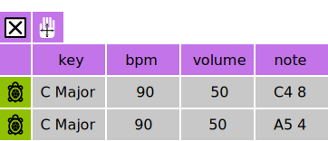
The Status widget is a tool for inspecting the status of Music Blocks as it is running. By default, the key, BPM, and volume are displayed. Also, each note is displayed as it is played. There is one row per voice in the status table.
Additional Print blocks can be added to the Status widget to display additional music factors, e.g., duplicate, transposition, skip, staccato and slur, and graphics factors, e.g., x, y, heading, color, shade, grey, and pensize.

You can do additional programming within the status block. In the example above,
whole notes played is multiplied by 4 (to calculate quarter
notes played) before being displayed.
4.2 Generating Chunks of Notes
Using the Phrase Maker, it is possible to generate chunks of notes at a much faster speed.
4.2.1 The Phrase Maker
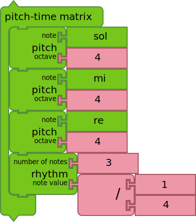
Music Blocks provides a widget, the Phrase maker, as a scaffold for getting started.
Once you've launched Music Blocks in your browser, start by clicking on the Phrase maker stack that appears in the middle of the screen. (For the moment, ignore the Start block.) You'll see a grid organized vertically by pitch and horizontally by rhythm.
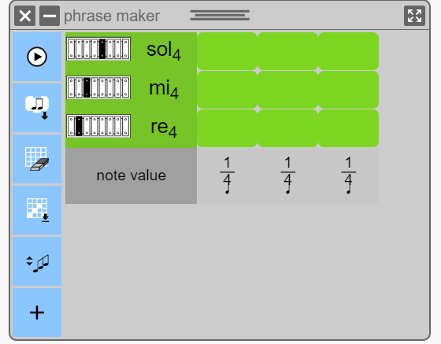
The matrix in the figure above has three Pitch blocks and one Rhythm block, which is used to create a 3 x 3 grid of pitch and time.
Note that the default matrix has five Pitch blocks, one Drum block, and
two Mouse (movement) blocks. Hence, you will see eight rows, one for each pitch,
drum, and mouse (movement). (A ninth row at the bottom is used for specifying the rhythms
associated with each note.) Also by default, there are two Rhythm blocks, which
specifies six quarter (1/4) notes followed by one half
(1/2) note.
By clicking on individual cells in the grid, you should hear individual notes (or chords
if you click on more than one cell in a column). In the figure, three quarter notes are
selected (black cells). First Re 4, followed by Mi 4, followed
by Sol 4.

If you click on the Play button (found in the top row of the grid), you will hear
a sequence of notes played (from left to right): Re 4, Mi 4,
Sol 4.

Once you have a group of notes (a "chunk") that you like, click on the Save button (just to the right of the Play button). This will create a stack of blocks that can used to play these same notes programmatically. (More on that below.)
You can rearrange the selected notes in the grid and save other chunks as well.

The Sort button will reorder the pitches in the matrix from highest to lowest and eliminate any duplicate Pitch blocks.

There is also an Erase button that will clear the grid.
Don't worry. You can reopen the matrix at anytime (it will remember its previous state) and since you can define as many chunks as you want, feel free to experiment.
Tip: You can put a chunk inside a Phrase maker block to generate the matrix to corresponds to that chunk.

The chunk created when you click on the matrix is a stack of blocks. The blocks are
nested: an Action block contains three Note value blocks, each of which
contains a Pitch block. The Action block has a name automatically
generated by the matrix, in this case, chunk. (You can rename the action by clicking on
the name.). Each note has a duration (in this case 4, which represents a quarter note).
Try putting different numbers in and see (hear) what happens. Each note block also has a
pitch block (if it were a chord, there would be multiple Pitch blocks nested
inside the Note block's clamp). Each pitch block has a pitch name (Re,
Mi, and Sol), and a pitch octave; in this example, the octave is
4 for each pitch. (Try changing the pitch names and the pitch octaves.)
To play the chuck, simply click on the action block (on the word action). You should hear the notes play, ordered from top to bottom.
4.2.2 The Rhythm Block

Rhythm blocks are used to generate rhythm patterns in the Phrase maker block. The top argument to the Rhythm block is the number of notes. The bottom argument is the duration of the note. In the top example above, three columns for quarter notes would be generated in the matrix. In the middle example, one column for an eighth note would be generated. In the bottom example, seven columns for 16th notes would be generated.

You can use as many Rhythm blocks as you'd like inside the Phrase maker block. In the above example, two Rhythm blocks are used, resulting in three quarter notes and six eighth notes.
4.2.3 Creating Tuplets

Tuplets are a collection of notes that get scaled to a specific duration. Using tuplets makes it easy to create groups of notes that are not based on a power of 2.
In the example above, three quarter notes—defined in the Simple Tuplet block—are played in the time of a single quarter note. The result is three twelfth notes. (This form, which is quite common in music, is called a triplet. Other common tuplets include a quintuplet and a septuplet.)

In the example above, the three quarter notes are defined in the Rhythm block embedded in the Tuplet block. As with the Simple Tuplet example, they are played in the time of a single quarter note. The result is three twelfth notes. This more complex form allows for intermixing multiple rhythms within single tuplet.

In the example above, the two Rhythm blocks are embedded in the Tuplet block, resulting in a more complex rhythm.
Note: You can mix and match Rhythm blocks and Tuplet blocks when defining your matrix.
4.2.4 What is a Tuplet?
4.2.5 Using Individual Notes
You can also use individual notes when defining the grid. These blocks will expand into Rhythm blocks with the corresponding values.
4.2.6 Using a Scale of Pitches

You can use the Scalar step block to generate a scale of pitches in the matrix.
In the example above, the pitches comprising the G major scale in the 4th octave are added
to the grid. Note that in order to put the highest note on top, the first pitch is the
Sol in Octave 5. From there, we use -1 as the
argument to the Scalar step block inside the Repeat, working our way
down to Sol in Octave 4. Another detail to note is the use of
the Mode length block.
4.3 Generating Rhythms
The Rhythm Maker block is used to launch a widget similar to the Phrase maker block. The widget can be used to generate rhythmic patterns.
The argument to the Rhythm Maker block specifies the duration that will be subdivided to generate a rhythmic pattern. By default, it is 1 / 1, e.g., a whole note.
The Set Drum blocks contained in the clamp of the Rhythm Maker block indicates the number of rhythms to be defined simultaneously. By default, two rhythm "rulers" are defined. The embedded Rhythm blocks define the initial subdivision of each rhythm ruler.
When the Rhythm Maker block is clicked, the Rhythm Maker widget is opened. It contains a row for each rhythm ruler. An input in the top row of the widget is used to specify how many subdivisions will be created within a cell when it is clicked. By default, 2 subdivisions are created.
As shown in the above figure, the top rhythm ruler has been divided into two half-notes and the bottom rhythm ruler has been divided into three third-notes. Clicking on the Play button to the left of each row will playback the rhythm using a drum for each beat. The Play-all button on the upper-left of the widget will play back all rhythms simultaneously.
The rhythm can be further subdivided by clicking in individual cells. In the example above, two quarter-notes have been created by clicking on one of the half-notes.
By dragging across multiple cells, they become tied. In the example above, two third-notes have been tied into one two-thirds-note.

The Save stack button will export rhythm stacks.

These stacks of rhythms can be used to define rhythmic patterns used with the Phrase maker block.

The Save drum machine button will export Start stacks that will play the rhythms as drum machines.
Another feature of the Rhythm Maker widget is the ability to tap out a rhythm. By clicking on the Tap button and then clicking on a cell inside one of the rhythm rulers, you will be prompted (by four tones) to begin tapping the mouse button to divide the cell into sub-cells. Once the fourth tone has sounded, a progress bar will run from left to right across the screen. Each click of the mouse will define another beat within the cell. If you don't like your rhythm, use the Undo button and try again.
4.4 Musical Modes
Musical modes are used to specify the relationship between intervals (or steps) in a scale. Since Western music is based on 12 half-steps per octave, modes specify how many half steps there are between each note in a scale.
By default, Music Blocks uses the Major mode, which, in the
Key of C, maps to the white keys on a piano. The
intervals in the Major mode are 2, 2, 1, 2, 2, 2, 1. Many other
common modes are built into Music Blocks, including, of course, Minor mode, which
uses 2, 1, 2, 2, 1, 2, 2 as its intervals.
Note that not every mode uses 7 intervals per octave. For example, the
Chromatic mode uses 11 intervals:
1, 1, 1, 1, 1, 1, 1, 1, 1, 1, 1, 1. The Japanese mode uses only 5
intervals: 1, 4, 2, 3, 2],. What is important is that the sum of the
intervals in an octave is 12 half-steps.
The Mode length block will return the number of intervals (scalar steps) in the current mode.
The Mode widget lets you explore modes and generate custom modes. You invoke the widget with the Custom mode block. The mode specified in the Set key block will be the default mode when the widget launches.
In the above example, the widget has been launched with Major mode (the default). Note that the notes included in the mode are indicated by the protruding sectors with 'X's, which are arrayed in a circular pattern of twelve half-steps to complete the octave.
Since the intervals in the Major mode are 2, 2, 1, 2, 2, 2, 1, the
notes are 0, 2, 4, 5, 7,
9,11, and 12 (one octave above 0).
The widget controls run along the toolbar at the top. From left to right are:
Play all, which will play a scale using the current mode;
Save, which will save the current mode as the Custom mode and save a stack of Pitch blocks that can be used with the Phrase Maker block;
Rotate counter-clockwise, which will rotate the mode counter-clockwise (See the example below);
Rotate clockwise, which will rotate the mode clockwise (See the example below);
Invert, which will invert the mode (See the example below);
Undo, which will restore the mode to the previous version; and
Close, which will close the widget.
You can also click on individual notes to activate or deactivate them.
Note that the mode inside the Custom mode block is updated whenever the mode is changed inside the widget.
In the above example, the Major mode has been rotated counter-clockwise, transforming it into Dorian.
In the above example, the Major mode has been rotated clockwise, transforming it into Locrian.
In the above example, the Major mode has been inverted, transforming it into Phrygian.
Note: The build-in modes in Music Blocks can be found in musicutils.js.
The Save button exports a stack of blocks representing the mode that can be used inside the Phrase maker block.
4.5 Meters

The Meter Widget block is used to explore strong and weak beats. Launch the widget with the meter you want to explore. (In the example, the meter is 4 beats per measure, where each beat is one quarter note.)
Inside the widget, you can click on a sector to indicate a strong beat. (Clicking on the X will revert the beat to a weak beat.) In the figure, the first and third beats are strong.
The Play button will play the beat, using a snare drum for strong beats and a kick drum for weak beats.

The Save button will export On strong beat do blocks for each strong beat.
4.6 The Pitch-Drum Matrix

The Set Drum block is used to map the enclosed pitches into drum sounds. Drum
sounds are played in a monopitch using the specified drum sample. In the example above, a
kick drum will be substituted for each occurrence of a Re
4.


As an experience for creating mapping with the Set Drum block, we provide the Drum-Pitch Matrix. You use it to map between pitches and drums. The output is a stack of Set Dum blocks.
4.7 Exploring Musical Proportions
The Pitch Staircase block is used to launch a widget similar to the Phrase maker, which can be used to generate different pitches using a given pitch and musical proportion.
The Pitch blocks contained in the clamp of the Pitch Staircase block define the pitches to be initialized simultaneously. By default, one pitch is defined and it have default note "la" and octave "3".
When Pitch Staircase block is clicked, the Pitch Staircase widget is initialized. The widget contains row for every Pitch block contained in the clamp of the Pitch Staircase block. The input fields in the top row of the widget specify the musical proportions used to create new pitches in the staircase. The inputs correspond to the numerator and denominator in the proportion respectively. By default the proportion is 3:2.
Clicking on the Play button to the left of each row will playback the notes associated with that step in the stairs. The Play-all button on the upper-left of the widget will play back all the pitch steps simultaneously. A second Play-all button to the right of the stair plays in increasing order of frequency first, then in decreasing order of frequency as well, completing a scale.
The Save stack button will export pitch stacks. For example, in the above configuration, the output from pressing the Save stack button is shown below:
These stacks can be used with the Phrase maker block to define the rows in the matrix.
4.8 Generating Arbitrary Pitches
The Pitch Slider block is used to launch a widget that is used to generate arbitrary pitches. It differs from the Pitch Staircase widget in that it is used to create frequencies that vary continuously within the range of a specified octave.
Each Sine block contained within the clamp of the Pitch Slider block defines the initial pitch for an octave.
When the Pitch Slider block is clicked, the Pitch Slider widget is initialized. The widget will have one column for each Sine block in the clamp. Every column has a slider that can be used to move up or down in frequency, continuously or in intervals of 1/12th of the starting frequency. The mouse is used to move the frequency up and down continuously. Buttons are used for intervals. Arrow keys can also be used to move up and down, or between columns.

Clicking in a column will extract the corresponding Note blocks, for example:
4.9 Changing Tempo
The Tempo block is used to launch a widget that enables the user to visualize Tempo, defined in beats per minute (BPM). When the Tempo block is clicked, the Tempo widget is initialized.
The Master Beats per Minute block contained in the clamp of the
Tempo block sets the initial tempo used by the widget. This determines the speed
at which the ball in the widget moves back and forth. If BPM is 60, then it
will take one second for the ball to move across the widget. A round-trip would take two
seconds.
The top row of the widget holds the Play/pause button, the Speed up and Slow down buttons, and an input field for updating the Tempo.
You can also update the tempo by clicking twice in spaced succession in the widget: the
new beats per minute (BPM) is determined as the time between the two clicks. For example,
if there is 1/2 second between clicks, the new BPM will be set as
120.
4.10 Custom Timbres
While Music Blocks comes with many built-in instruments, it is also possible to create custom timbres with unique sound qualities.

The Timbre block can be used to launch the Timbre widget, which lets you add synthesizers, oscillators, effects, and filters to create a custom timbre, which can be used in your Music Blocks programs.
The name of the custom timbre is defined by the argument passed to the block (by default,
custom). This name is passed to the Set timbre block in order to use
your custom timbre.
The Timbre widget has a number of different panels, each of which is used to set the parameters of the components that define your custom timbre.
-
The Play button, which lets you test the sound quality of your custom timbre.
By default, it will play
Sol,Mi,Solusing the combination of filters you define.

You can also put notes in the Timbre block to use for testing your sound. In the example above, a scale will be used for the test.
- The Save button, which will save your custom timbre for use in your program.
- The Synth button, which lets you choose between an AM synth, a PM synth, or a Duo synth.
- The Oscillator button, which lets you choose between a sine wave, square wave, triangle wave, or sawtooth wave. You can also change the number of partials.
- The Envelope button, which lets you change the shape of the sound envelope, with controls for attack, decay, sustain, and release.

- The Effects button, which lets you add effects to your custom timbre: tremelo, vibrato, chorus, phaser, and distortion. When an effect is selected, additional controls will appear in the widget.
-
The Filter button, which lets you choose between a number of different filter types.
-
The Add filter button, which lets you add addition filters to your custom timbre.
-
The Undo button.
As you add synthesizers, effects, and filters with the widget, blocks corresponding to your choices are added to the Timbre block. This lets you reopen the widget to fine-tune your custom timbre.
4.11 The Music Keyboard
The Music Keyboard is used to generate notes by pressing keys of a virtual keyboard.
When there are no Pitch blocks inside the widget clamp, a keyboard with all keys between C4 and G5 is created.

When there are Pitch blocks inside the widget clamp, a keyboard with only those pitches is created.
Click on the keys to hear sounds. Click on the Play button to playback all of the notes played. Click on the Save button to output code (a series of Note blocks). The Clear button is used to delete all keys pressed previously in order to start new.
The MIDI input allows for a using a MIDI device to generate notes.
The metronome feature will generate a beat to enable candence.
4.12 Changing Temperament
Tempering is the process of altering the size of an interval by making it narrower or wider than pure. It is also possible to change and create different tuning systems.
The Temperament block is used to launch a widget that enables the user to visualize and edit notes within an octave.
You can select a temperament system from the pie menu which is passed as an argument to
the block. This name is passed to the Set temperament block in order to play the
notes in selected temperament system. Starting Pitch is the argument of pitch
block inside temperament block. In the above example, starting pitch is C4.
In the above example, selected temperament is Just Intonation. Notes within an octave can be viewed in the form of circle. These circles represent pitch numbers. Note that the pitches that are closer together in selected temperament system are visually closer and pitches that are farther apart looks farther.
The information regarding any note can be viewed by clicking on the respective circle. In
the above example, circle (pitch number) 2 is D4. The frequency
of note can be changed through edit button (left hand side corner of note information
popup).
Information regarding notes can also be viewed in the form of a table as shown in the above example. The table will show all the information about pitches that lie within an octave. This information includes pitch number, interval, ratio, note, frequency and mode.
The frequency of any note is calculated by Starting Pitch Frequency x
Ratio.
The widget controls are as follows:
The Clear button at the bottom of the widget will clear all pitches except for a
single 0 from which the user may add pitches.
The Play all button will play through all the pitches in an octave and then it will play backwards down the pitches.
The Save button will save custom temperament for use in your program. It will create a set temperament block. This block will tune the notes attached to it according to the selected temperament.
The Table button is used to toggle between circular and tabular representation of notes.
The Add button is used to edit notes through different tools:

The Equal edit tool is used to make equal divisions between two
pitch numbers. In the above example, two equal divisions are made between pitch numbers
0 and 1 and the resultant number of notes within an octave are
changed from 12 to 13.

The Ratio tool is used to add notes of specified ratios in such a way that
the resultant pitches wrap inside a single octave. Recursion represents the number of
times notes ratio calculation is repeated. In the above example, 2 notes are added in
pitch space and the resultant number of notes within an octave are changed from 12 to 14.
Frequency of first pitch is (Starting Pitch Frequency) * (16/13) and second pitch is
(Starting Pitch Frequency) * (16/13)².

The Arbitrary edit tool is used to add a note in an arbitrary position. In
this panel, whenever the user hovers over the outer circle, a frequency-slider window pops
up, allowing the user to add a note according to a chosen frequency. In the above example,
a new note will be added somewhere between pitch numbers 2 and
3 by adjusting the frequency slider.
The Octave Space tool is used to edit the octave ratio. The standard octave
space is 2:1. In the above example, octave space will be changed to 3:1 after clicking on
Done.
The Drag button will drag the widget.
The Close button will close the widget.
4.13 The Oscilloscope
Music Blocks has an Oscilloscope Widget to visualize the music as it plays.


A separate wave will be displayed for each mouse.
4.14 The Sampler

You can import sound samples (.WAV files) and use them with the *Set Instrument" block. The Sampler widget lets you set the center pitch of your sample so that it can be tuned.

You can then use the Sample block as you would any input to the Set Instrument block.

4.15 Arpeggio
You can design custom sequences to use with the Arpeggio block using the Arpeggio widget. The widget lets you "paint" intervals that are then saved to a "custom" chord, which can be used with the Arpeggio block.
The numeric argument to the widget block, 12 in the figure above, designates
the number of columns. The widget always provides a range of half-steps (one octave in the
default a 12-step equal-temperament tuning). (If
you are in a temperament with more notes per ocatve, the grid will expand.) The rows that
represent notes in the current mode are highlighted.
The horizonal axis is time and the verical axis is half-step offsets from the base note.
The sequence in the pattern above is do mi sol do do mi do sol mi do do sol.
5. Beyond Music Blocks
Previous Section (4. Widgets) | Back to Table of Contents
Music Blocks is a waypoint, not a destination. One of the goals is to point the learner towards other powerful tools.
5.1 Lilypond
One such tool is Lilypond, a music engraving program.
The Save as Lilypond option from the Save menu will transcribe your composition (Only available in Advanced Mode).
Note that if you use a Print block inside of a note, Lilypond will create a "markup" or annotation for that note. It is a simple way to add lyrics to your score.

\version "2.18.2"
mouse = {
c'8 c'8 c'8 c'8 c'4 c'4 g'8 g'8 g'8 g'8 g'4 g'4 a'8 a'8 a'8 a'8 a'4
a'4 g'8 g'8 g'8 g'8 g'4 g'4 f'8 f'8 f'8 f'8 f'4 f'4 e'8 e'8 e'8 e'8
e'4 e'4 d'8 d'8 d'8 d'8 d'4 d'4 c'8 c'8 c'8 c'8 c'4 c'4
}
\score {
<<
\new Staff = "treble" {
\clef "treble"
\set Staff.instrumentName = #"mouse" \mouse
}
>>
\layout { }
}
5.2 Other Exports
In addition to Lilypond, there are several other export formats supported, including ABC, MusicXML, WAV, SVG, and PNG.
ABC notation is a shorthand form of musical notation. In basic form it uses the letters A through G, letter notation, to represent the given notes, with other elements used to place added value on these – sharp, flat, the length of the note, key, ornamentation (See https://en.wikipedia.org/wiki/ABC_notation).
MusicXML is an XML-based file format for representing Western musical notation. The format is open, fully documented, and can be freely used under the W3C Community Final Specification Agreement (See https://en.wikipedia.org/wiki/MusicXML).
WAV (Waveform Audio File Format) is an audio file format standard, developed by IBM and Microsoft, for storing an audio bitstream on PCs (See https://en.wikipedia.org/wiki/WAV).
PNG (Portable Network Graphics) is a raster-graphics file format that supports lossless data compression (See https://en.wikipedia.org/wiki/Portable_Network_Graphics). You can save your artwork as PNG.
SVG (Scalable Vector Graphics) is an Extensible Markup Language (XML)-based vector image format for two-dimensional graphics with support for interactivity and animation (See https://en.wikipedia.org/wiki/Scalable_Vector_Graphics). You can also save your artwork as SVG.
Note that artwork saved as PNG or SVG can subsequently be imported into Music Blocks to be used with either the Show or Avatar blocks.
Help artwork
Note for translators: The artwork used by the help widget (and used in this README file) can be created by typing Alt-H into Music Blocks. Artwork for each block will be generated and saved by the browser.
5.3 The JavaScript Editor
There are practical limits to the size and complexity of Music Blocks programs. At some point we expect Music Blocks programmers to move on to text-based programming languages. To facilitate this transition, there is a JavaScript widget that will convert your Music Blocks program into JavaScript.
The JavaScript code is written and viewed on the JavaScript Editor widget
which can be opened by pressing on the "JavaScript Editor"
(<>) button in the auxilliary menu.
Example code
For the block stacks (and mouse art generated after running),

the following code is generated:
let action = async mouse => {
await mouse.playNote(1 / 4, async () => {
await mouse.playPitch("do", 4);
console.log(mouse.NOTEVALUE);
return mouse.ENDFLOW;
});
let box1 = 0;
let box2 = 360 / mouse.MODELENGTH;
for (let i0 = 0; i0 < mouse.MODELENGTH * 2; i0++) {
await mouse.playNote(1 / 4, async () => {
if (box1 < mouse.MODELENGTH) {
await mouse.stepPitch(1);
await mouse.turnRight(box2);
} else {
await mouse.stepPitch(-1);
await mouse.turnLeft(box2);
}
await mouse.goForward(100);
return mouse.ENDFLOW;
});
box1 = box1 + 1;
}
return mouse.ENDFLOW;
};
new Mouse(async mouse => {
await mouse.clear();
await mouse.setInstrument("guitar", async () => {
await mouse.setColor(50);
await action(mouse);
return mouse.ENDFLOW;
});
return mouse.ENDMOUSE;
});
MusicBlocks.run();Here's the complete API of methods, getters, setters.
6. Appendix
Previous Section (5. Beyond Music Blocks) | Back to Table of Contents
6.1 Beginner Palettes
Looking for a block? The tables below (one for beginner mode and one for advanced mode) list the blocks by the palette where they are found.
Beginner mode
| Music | Programming | Graphics | |||||
|---|---|---|---|---|---|---|---|
| Palette | Blocks | Palette | Blocks | Palette | Blocks | ||
| Rhythm | note | Flow | repeat | Graphics | forward | ||
| note value drum | forever | back | |||||
| silence | if then | left | |||||
| tie | if then else | right | |||||
| note value | backward | set xy | |||||
| Meter | meter | Action | action | set heading | |||
| beats per second | start | arc | |||||
| master beats per second | broadcast | scroll xy | |||||
| on every note do | on event do | x | |||||
| notes played | do | y | |||||
| beat count | Boxes | store in box1 | heading | ||||
| Pitch | pitch | box1 | Pen | set color | |||
| pitch G4 | store in box2 | set shade | |||||
| scalar step (+/-) | box2 | set pen size | |||||
| pitch number | store in | pen down | |||||
| hertz | box | pen up | |||||
| fourth | add | fill | |||||
| fifth | add 1 to | background | |||||
| pitch in hertz | Number | number | color | ||||
| pitch number | random | Media | |||||
| scalar change in pitch | one of this or that | text | |||||
| change in pitch | + | show | |||||
| Interval | set key | - | avatar | ||||
| mode length | x | height | |||||
| movable do | / | width | |||||
| third | Boolean | = | bottom (screen) | ||||
| sixth | < | top (screen) | |||||
| chord I | > | left (screen) | |||||
| chord IV | right (screen) | ||||||
| chord V | Sensors | mouse button | |||||
| set temperament | cursor x | ||||||
| Tone | set instrument | cursor y | |||||
| vibrato | click | ||||||
| chorus | loudness | ||||||
| tremolo | Ensemble | set name | |||||
| Ornament | staccato | mouse name | |||||
| slur | |||||||
| neighbor (+/-) | |||||||
| Volume | crescendo | ||||||
| decrescendo | |||||||
| set master volume | |||||||
| set synth volume | |||||||
| set drum volume | |||||||
| Drum | drum | ||||||
| sound effect | |||||||
| set drum | |||||||
| Widget | status | ||||||
| phrase maker | |||||||
| C major scale | |||||||
| G major scale | |||||||
| rhythm maker | |||||||
| music keyboard | |||||||
| pitch slider | |||||||
| tempo | |||||||
| custom mode | |||||||
| rhythm | |||||||
| simple tuplet |
6.2 Advanced Palettes
| Music | Programming | Graphics | |||||
|---|---|---|---|---|---|---|---|
| Palette | Blocks | Palette | Blocks | Palette | Blocks | ||
| Rhythm | note value sol4 | Flow | repeat | Graphics | forward | ||
| note value G4 | forever | back | |||||
| note value +1 | if then | left | |||||
| note value 5 4 | if then else | right | |||||
| note value 7 | while | set xy | |||||
| note value 392 hertz | until | set heading | |||||
| dot | wait for | arc | |||||
| multiplicity note value | stop | bezier | |||||
| skipnotes | switch | control point 1 | |||||
| swings | case | control point 2 | |||||
| milliseconds | default | clear | |||||
| Meter | pickup | duplicate | scroll xy | ||||
| on strong beat | backward | wrap | |||||
| on weak beat do | Action | action | x | ||||
| no clock | start | y | |||||
| whole notes played | start drum | heading | |||||
| note counter | broadcast | Pen | set color | ||||
| measure count | on event do | set grey | |||||
| beat factor | do | set shade | |||||
| current meter | arg1 | set hue | |||||
| Pitch | scale degree | arg | set translucency | ||||
| sharp flat | calculate | set pen size | |||||
| accidental | do | pen down | |||||
| unison | calculate | pen up | |||||
| second | do | fill | |||||
| third | action | hollow line | |||||
| sixth | calculate | background | |||||
| seventh | return to URL | set font | |||||
| down third | return | pen size | |||||
| down sixth | Boxes | store in box1 | color | ||||
| octave | box1 | shade | |||||
| semi-tone transpose | store in box2 | grey | |||||
| register | box2 | black | |||||
| invert | store in | white | |||||
| sol | store in box | red | |||||
| G | box | orange | |||||
| sargam | box | yellow | |||||
| accidental | add | green | |||||
| number of octave | add 1 to | blue | |||||
| number of pitch | Number | number | purple | ||||
| set pitch number offset | random | Media | text | ||||
| MIDI | one of this or that | show | |||||
| Intervals | set key | + | avatar | ||||
| current key | - | note to frequency | |||||
| current mode | - | hertz | |||||
| mode length | x | stop media | |||||
| movable Do | / | open file | |||||
| define mode | abs | height | |||||
| scalar interval (+/-) | sqrt | width | |||||
| semi tone interval (+/-) | ^ | bottom (screen) | |||||
| major 3 | mod | top (screen) | |||||
| scalar interval measure | int | left (screen) | |||||
| semi-tone interval measure | Boolean | true | right (screen) | ||||
| interval name | = | Sensors | keyboard | ||||
| doubly | < | to ASCII | |||||
| set temperament | > | mouse bottom | |||||
| Tone | set instrument | or | cursor x | ||||
| voice name | and | cursor y | |||||
| audio sample | not | time | |||||
| vibrato | Heap | push | pixel color | ||||
| chorus | pop | red | |||||
| phaser | set heap | green | |||||
| tremolo | index heap | blue | |||||
| distortion | reverse heap | click | |||||
| harmonic | empty heap | loudness | |||||
| weighted partials | heap empty? | Ensemble | set name | ||||
| partial | heap length | mouse name | |||||
| FM synth | show heap | new mouse | |||||
| AM synth | Dictionary | get value | found mouse | ||||
| duo synth | set value | mouse sync | |||||
| Ornament | staccato | get value by name | mouse note value | ||||
| slur | set value by name | mouse pitch number | |||||
| neighbor (+/-) | dictionary | mouse notes played | |||||
| neighbor (+/-) | Extras | mouse x | |||||
| Volume | crescendo | comment | mouse y | ||||
| decrescendo | wait | set mouse | |||||
| set relative volume | open project | mouse heading | |||||
| set master volume | hide blocks | mouse color | |||||
| set synth volume | show blocks | start mouse | |||||
| set drum volume | no background | stop mouse | |||||
| fff | Program | set heap | mouse index heap | ||||
| ff | load heap | ||||||
| f | save heap | ||||||
| mf | set dictionary | ||||||
| mp | load dictionary | ||||||
| p | save heap to App | ||||||
| pp | load heap from App | ||||||
| ppp | open palette | ||||||
| master volume | open project | ||||||
| Drum | drum | make block | |||||
| sound effect | connect blocks | ||||||
| set drum | run blocks | ||||||
| map pitch to drum | move block | ||||||
| snare drum | delete block | ||||||
| kick drum | |||||||
| floor tom | |||||||
| cup drum | |||||||
| darbuka drum | |||||||
| hi hat | |||||||
| triangle drum | |||||||
| finger cymbals | |||||||
| ride bell | |||||||
| cow bell | |||||||
| crash | |||||||
| slap | |||||||
| clap | |||||||
| clang | |||||||
| chime | |||||||
| bubbles | |||||||
| bottle | |||||||
| dog | |||||||
| cricket | |||||||
| cat | |||||||
| duck | |||||||
| noise | |||||||
| effect | |||||||
| drum | |||||||
| noisename | |||||||
| tom tom | |||||||
| Widget | status | ||||||
| phrase maker | |||||||
| C major scale | |||||||
| G major scale | |||||||
| rhythm maker | |||||||
| pitch staircase | |||||||
| music keyboard | |||||||
| chromatic keyboard | |||||||
| pitch slider | |||||||
| pitch-drum maker | |||||||
| audio sampler | |||||||
| tempo | |||||||
| meter | |||||||
| timbre | |||||||
| temperament | |||||||
| rhythm | |||||||
| simple tuplet | |||||||
| triplet | |||||||
| quintuplet | |||||||
| septuplet | |||||||
| tuplet | |||||||
| whole note | |||||||
| half note | |||||||
| quarter note | |||||||
| eighth note | |||||||
| 1/16 note | |||||||
| 1/32 note | |||||||
| 1/64 note | |||||||
| custom mode |